<!DOCTYPE html PUBLIC "-//W3C//DTD XHTML 1.0 Transitional//EN" "http://www.w3.org/TR/xhtml1/DTD/xhtml1-transitional.dtd">
<html xmlns="http://www.w3.org/1999/xhtml">
<head>
<meta name="generator" content="NanoBlogger 3.1" />
<meta name="robots" content="all" />
<meta name="revisit-after" content="31 days" />
<meta http-equiv="Content-Type" content="text/html; charset=iso-8859-1" />

<title>Kurt's Weblog: August 2009 Archives</title>

<link rel="stylesheet" href="../styles/nb_default.css" type="text/css" />
<link rel="shortcut icon" href="../images/favicon.ico" />
<link rel="alternate" type="application/rss+xml" title="RSS 2.0" href="../rss.xml" />
<link rel="alternate" type="application/rss+xml" title="RSS 1.0" href="../index.xml" />
<link rel="alternate" type="application/atom+xml" title="Atom 0.3" href="../atom.xml" />

</head>

<body>

<div id="banner">
<h1><a href="../index.html" accesskey="1">Kurt's Weblog</a></h1>
<span class="description">electronic work log</span>
</div>

<div id="content">

<div class="blog">
<div id="menu">
	<a href="../index.html">Main</a>
</div>
</div>

<div class="blog">
<div class="item">
<a id="e2009-08-31T16_12_58.txt" name="e2009-08-31T16_12_58.txt"></a>
<h2 class="date">08.31.2009 16:12</h2>
<div class="blogbody">
<h3 class="title">AIS time and matplotlib</h3>
<div class="item-description">
I have been working more on AIS time.  In the process, I pushed gnuplot
over the edge.  I have been successfully using gnuplot since 1996, but
it is not the most flexible plotting program.  I'm forcing myself to
use matplotlib and not slide back into gnuplot.  Here is my latest
attempt with matplotlib.
<pre><tt><i><font color="#9A1900">#!/usr/bin/env python</font></i>
<!-- -->
<b><font color="#000080">from</font></b> numpy <b><font color="#000080">import</font></b> array
<b><font color="#000080">import</font></b> matplotlib<font color="#990000">.</font>pyplot as plt
<b><font color="#000080">import</font></b> sqlite3
<!-- -->
xmin<font color="#990000">,</font>xmax <font color="#990000">=</font> <font color="#993399">210000</font><font color="#990000">,</font><font color="#993399">220000</font>
<!-- -->
cx <font color="#990000">=</font> sqlite3<font color="#990000">.</font><b><font color="#000000">connect</font></b><font color="#990000">(</font><font color="#FF0000">'ais.db3'</font><font color="#990000">)</font>
<!-- -->
pos_ok   <font color="#990000">=</font> <b><font color="#000000">array</font></b><font color="#990000">(</font> <font color="#990000">[</font><b><font color="#000000">tuple</font></b><font color="#990000">(</font>row<font color="#990000">)</font> <b><font color="#0000FF">for</font></b> row <b><font color="#0000FF">in</font></b> cx<font color="#990000">.</font><b><font color="#000000">execute</font></b><font color="#990000">(</font><font color="#FF0000">'SELECT key,(est_sec) FROM position WHERE est_sec IS NOT NULL;'</font><font color="#990000">)]</font> <font color="#990000">).</font>T
pos_fail <font color="#990000">=</font> <b><font color="#000000">array</font></b><font color="#990000">(</font> <font color="#990000">[</font><b><font color="#000000">tuple</font></b><font color="#990000">(</font>row<font color="#990000">)</font> <b><font color="#0000FF">for</font></b> row <b><font color="#0000FF">in</font></b> cx<font color="#990000">.</font><b><font color="#000000">execute</font></b><font color="#990000">(</font><font color="#FF0000">'SELECT key,(cg_sec) FROM position WHERE est_sec IS NULL;'</font><font color="#990000">)]</font> <font color="#990000">).</font>T
<!-- -->
bs_ok    <font color="#990000">=</font> <b><font color="#000000">array</font></b><font color="#990000">(</font> <font color="#990000">[</font><b><font color="#000000">tuple</font></b><font color="#990000">(</font>row<font color="#990000">)</font> <b><font color="#0000FF">for</font></b> row <b><font color="#0000FF">in</font></b> cx<font color="#990000">.</font><b><font color="#000000">execute</font></b><font color="#990000">(</font><font color="#FF0000">'SELECT key,.1 FROM bsreport WHERE est_sec IS NOT NULL;'</font><font color="#990000">)]</font> <font color="#990000">).</font>T
<!-- -->
pos_sec  <font color="#990000">=</font> <b><font color="#000000">array</font></b><font color="#990000">(</font> <font color="#990000">[</font><b><font color="#000000">tuple</font></b><font color="#990000">(</font>row<font color="#990000">)</font> <b><font color="#0000FF">for</font></b> row <b><font color="#0000FF">in</font></b> cx<font color="#990000">.</font><b><font color="#000000">execute</font></b><font color="#990000">(</font><font color="#FF0000">'SELECT key,timestamp FROM position WHERE timestamp &lt; 60;'</font><font color="#990000">)]</font> <font color="#990000">).</font>T
<!-- -->
fig <font color="#990000">=</font> plt<font color="#990000">.</font><b><font color="#000000">figure</font></b><font color="#990000">()</font>
ax1 <font color="#990000">=</font> fig<font color="#990000">.</font><b><font color="#000000">add_subplot</font></b><font color="#990000">(</font><font color="#993399">2</font><font color="#990000">,</font><font color="#993399">1</font><font color="#990000">,</font><font color="#993399">1</font><font color="#990000">)</font>
ax1<font color="#990000">.</font><b><font color="#000000">plot</font></b><font color="#990000">(</font>pos_fail<font color="#990000">[</font><font color="#993399">0</font><font color="#990000">],</font>pos_fail<font color="#990000">[</font><font color="#993399">1</font><font color="#990000">],</font><font color="#FF0000">'b+'</font><font color="#990000">,</font> pos_ok<font color="#990000">[</font><font color="#993399">0</font><font color="#990000">],</font>pos_ok<font color="#990000">[</font><font color="#993399">1</font><font color="#990000">],</font><font color="#FF0000">'ro'</font><font color="#990000">)</font>
<!-- -->
ax2 <font color="#990000">=</font> ax1<font color="#990000">.</font><b><font color="#000000">twinx</font></b><font color="#990000">()</font>
ax2<font color="#990000">.</font><b><font color="#000000">plot</font></b><font color="#990000">(</font>bs_ok<font color="#990000">[</font><font color="#993399">0</font><font color="#990000">],</font> bs_ok<font color="#990000">[</font><font color="#993399">1</font><font color="#990000">],</font> <font color="#FF0000">'gx'</font><font color="#990000">)</font>
<!-- -->
ax2<font color="#990000">.</font><b><font color="#000000">set_ylim</font></b><font color="#990000">(</font><font color="#993399">0</font><font color="#990000">,</font><font color="#993399">10</font><font color="#990000">)</font> <i><font color="#9A1900">#ymin, ymax  # For plotting on top of the same graph, but with a different axis</font></i>
ax2<font color="#990000">.</font><b><font color="#000000">set_xlim</font></b><font color="#990000">(</font>xmin<font color="#990000">,</font>xmax<font color="#990000">)</font>
<!-- -->
ax3 <font color="#990000">=</font> fig<font color="#990000">.</font><b><font color="#000000">add_subplot</font></b><font color="#990000">(</font><font color="#993399">2</font><font color="#990000">,</font><font color="#993399">1</font><font color="#990000">,</font><font color="#993399">2</font><font color="#990000">)</font>
ax3<font color="#990000">.</font><b><font color="#000000">plot</font></b><font color="#990000">(</font>pos_sec<font color="#990000">[</font><font color="#993399">0</font><font color="#990000">],</font>pos_sec<font color="#990000">[</font><font color="#993399">1</font><font color="#990000">],</font><font color="#FF0000">'xb-'</font><font color="#990000">)</font>
<!-- -->
ax3<font color="#990000">.</font><b><font color="#000000">set_xlim</font></b><font color="#990000">(</font>xmin<font color="#990000">,</font>xmax<font color="#990000">)</font>
<!-- -->
plt<font color="#990000">.</font><b><font color="#000000">show</font></b><font color="#990000">()</font></tt></pre>
I've cheated a bit and used photoshop to add labels to this plot, but it is
great to be able to add plots with different y-axes on the same graph/subplot.
<br /><br />
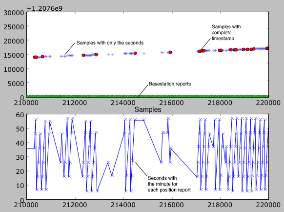
</div>
</div>

<div class="posted">
<br />Posted by <span class="item-creator">Kurt</span>
| <a class="link" href="2009-08.html#e2009-08-31T16_12_58.txt">Permalink</a>

<!-- <br /><a href="archives/2009-09-01T00_12_29.html#comments">Comments</a> -->
</div>
</div>
<div class="item">
<a id="e2009-08-31T15_08_13.txt" name="e2009-08-31T15_08_13.txt"></a>
<h2 class="date">08.31.2009 15:08</h2>
<div class="blogbody">
<h3 class="title">Fink and Mac OSX 10.6</h3>
<div class="item-description">
I have my copies of Mac OSX 10.6 on order, but I am bummed by the lack
of proper support Apple is giving X11.  X11 is the number one
application on the Mac that I use.  I also saw that PPC support has
gone away.  I wonder if old PPC applications will still run.
Hopefully this will all shake out quickly with good results.
<br /><br />
I am looking forward to 64-bit fink, but wonder how many of the
packages I use on a daily basis will require serious effort to get
back working.
<br /><br />
Monipol has a post about migrating your fink setup from an older
version to a newer version: <a href="http://finkers.wordpress.com/2009/08/31/starting-anew/">Starting anew</a>
<br /><br />
and he has got a link to this video about fink...
<br /><br />
<object width="480" height="385"><param name="movie" value="http://www.youtube.com/v/VsZm5hqDtAY&hl=en&fs=1&rel=0&color1=0x3a3a3a&color2=0x999999"></param><param name="allowFullScreen" value="true"></param><param name="allowscriptaccess" value="always"></param><embed src="http://www.youtube.com/v/VsZm5hqDtAY&hl=en&fs=1&rel=0&color1=0x3a3a3a&color2=0x999999" type="application/x-shockwave-flash" allowscriptaccess="always" allowfullscreen="true" width="480" height="385"></embed></object>
</div>
</div>

<div class="posted">
<br />Posted by <span class="item-creator">Kurt</span>
| <a class="link" href="2009-08.html#e2009-08-31T15_08_13.txt">Permalink</a>

<!-- <br /><a href="archives/2009-08-31T16_12_58.html#comments">Comments</a> -->
</div>
</div>
<div class="item">
<a id="e2009-08-31T12_59_42.txt" name="e2009-08-31T12_59_42.txt"></a>
<h2 class="date">08.31.2009 12:59</h2>
<div class="blogbody">
<h3 class="title">NOAA report on the US East Coast Sea Level Anomaly</h3>
<div class="item-description">
I won't have time to really dig into this, but I have to wonder how
this impacts the definition of primary stations used for hydrographic
surveying.
<br /><br />
<a href="http://www.noaanews.noaa.gov/stories2009/20090831_tides.html">NOAA Report Explains Sea Level Anomaly this Summer along the U.S. Atlantic Coast</a> [noaa.gov]
<br /><br />
<a
href="http://tidesandcurrents.noaa.gov/publications/EastCoastSeaLevelAnomaly_2009.pdf">NOAA
Technical Report NOS CO-OPS 051; ELEVATED EAST COAST SEA LEVELS
ANOMALY: July - June 2009</a> by Sweet, Zervas, and Gill (38 pp)
<br /><br />
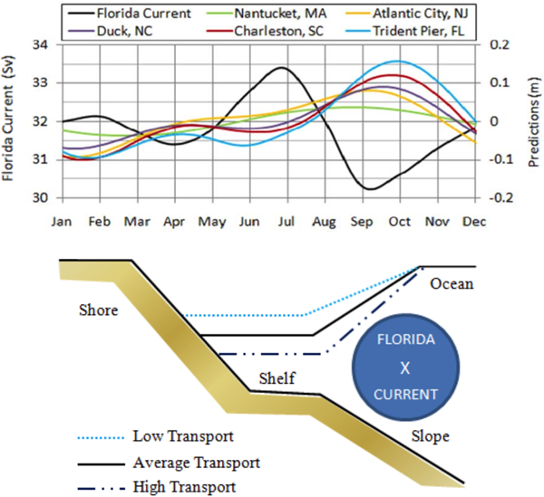
</div>
</div>

<div class="posted">
<br />Posted by <span class="item-creator">Kurt</span>
| <a class="link" href="2009-08.html#e2009-08-31T12_59_42.txt">Permalink</a>

<!-- <br /><a href="archives/2009-08-31T15_08_13.html#comments">Comments</a> -->
</div>
</div>
<div class="item">
<a id="e2009-08-27T15_30_57.txt" name="e2009-08-27T15_30_57.txt"></a>
<h2 class="date">08.27.2009 15:30</h2>
<div class="blogbody">
<h3 class="title">The Healy Aloftcon is now in Google Oceans</h3>
<div class="item-description">
The USCGC Healy ice breaker is now in Google Oceans.  This is my
second contribution to the content available directly in Google Earth.
Google is pulling from my <a href="http://vislab-ccom.unh.edu/~schwehr/healy/healy-aloftcon-latest.georss">GeoRSS feed of the Aloftcon</a>.  First you have
to enable the layer.
<br /><br />
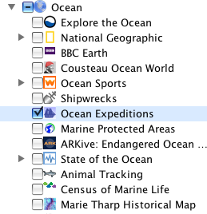
<br /><br />
You then have to zoom into the area where the Healy is currently located and the icon will pop into existance.  Right now that is 81.17N 151.196W
<br /><br />
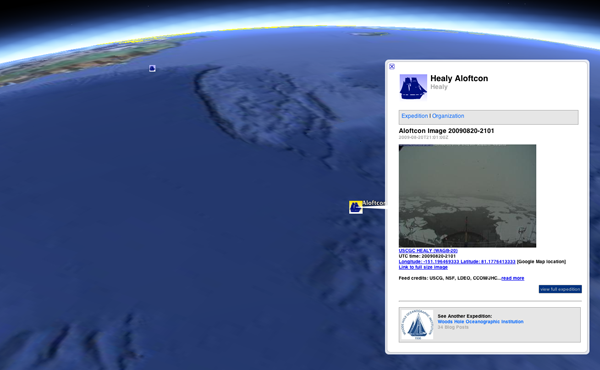
<br /><br />
Here is my version of the <a href="http://vislab-ccom.unh.edu/~schwehr/healy/healy-aloftcon-updating.kml">Healy Aloftcon tracks</a>.
</div>
</div>

<div class="posted">
<br />Posted by <span class="item-creator">Kurt</span>
| <a class="link" href="2009-08.html#e2009-08-27T15_30_57.txt">Permalink</a>

<!-- <br /><a href="archives/2009-08-31T12_59_42.html#comments">Comments</a> -->
</div>
</div>
<div class="item">
<a id="e2009-08-26T23_07_25.txt" name="e2009-08-26T23_07_25.txt"></a>
<h2 class="date">08.26.2009 23:07</h2>
<div class="blogbody">
<h3 class="title">Finding out about your mac</h3>
<div class="item-description">
There are lots of ways that you can query a Mac about the hardward and
software installed on the machine.  The old standby is uname will tell us the hardware (PPC or intel x86) and the kernel version:
<pre><b>uname -a</b>
Darwin CatBoxIII 9.7.0 Darwin Kernel Version 9.7.0: Tue Mar 31 22:52:17 PDT 2009; root:xnu-1228.12.14~1/RELEASE_I386 i386</pre>
And on a G5 Power Mac tower
<pre><b>uname -a</b>
Darwin eel.ccom.nh 9.8.0 Darwin Kernel Version 9.8.0: Wed Jul 15 16:57:01 PDT 2009; root:xnu-1228.15.4~1/RELEASE_PPC Power Macintosh</pre>
<i>ifconfig</i> will tell you the MAC addresses of your ethernet, wifi, and blue network interfaces.
<br /><br />
Then come the Mac OSX specific tools...
<br /><br />
<i>softwareupdate --list</i> will tell you about what will be updated if you do 
<i>sudo softwareupdate -i -a</i>
<pre><b>softwareupdate --list</b>
<!-- -->
Software Update found the following new or updated software:
   * RemoteDesktopAdmin33-3.3
        Remote Desktop Admin Update (3.3), 57530K [recommended]
   * Safari403Leo-4.0.3
        Safari (4.0.3), 41443K [recommended] [restart]
   * MacOSXUpd10.5.8-10.5.8
        Mac OS X Update (10.5.8), 169217K [recommended] [restart]</pre>
And about xcode:
<pre><b>xcodebuild -version</b>
code 3.1.2
Component versions: DevToolsCore-1148.0; DevToolsSupport-1102.0
BuildVersion: 9M2621</b></pre>
About the version of Mac OSX:
<pre><b>sw_vers</b>
ProductName:    Mac OS X
ProductVersion: 10.5.7
BuildVersion:   9J61</pre>
And the kitchen sink of harward info ... try this one without the "|head" and be
prepaired for many pages of info.
<pre><b>system_profiler | head</b>
Hardware:
<!-- -->
    Hardware Overview:
<!-- -->
      Model Name: MacBook Pro
      Model Identifier: MacBookPro3,1
      Processor Name: Intel Core 2 Duo
      Processor Speed: 2.4 GHz
      Number Of Processors: 1
      Total Number Of Cores: 2</pre>
ioreg shows the "I/O Kit registry" meanining?  But it has the key you need for checking your warrenty on the mac:
<pre><b>ioreg -l | grep IOPlatformSerialNumber</b>
    |   "IOPlatformSerialNumber" = "W**********G"</pre>
Then put in that number at <a href="https://selfsolve.apple.com/GetWarranty.do">https://selfsolve.apple.com/GetWarranty.do</a>
<br /><br />
For updating hardware inventories for our IT team, I do this.  Maybe I should add a few like the warrenty info.
<pre>hostname=`uname -n`
ip=`ifconfig en0 | grep inet | awk '{print $2}'`
serial=`system_profiler -detailLevel basic SPHardwareDataType | grep 'Serial Number:' | awk '{print $3}'`
model=`system_profiler -detailLevel basic SPHardwareDataType | grep 'Model Name:' | cut -c 7- `</pre>
If you have fink installed, you can do these:
<pre>fink -V | head -n2
Package manager version: 0.29.8
Distribution version: selfupdate-cvs Tue Aug 25 22:08:51 2009, 10.5, i386</pre>
List installed packages with <i>fink list -i</i>.  List out of date packages with <i>fink list -o</i>.  You can list files in an installed package:
<pre><b>dpkg -L tar | head</b>
/.
/sw
/sw/bin
/sw/bin/gtar
/sw/lib
/sw/lib/rmt
/sw/sbin
/sw/share
/sw/share/doc
/sw/share/doc/tar</pre>
As which fink package owns a file:
<ore><b>pkg -S /sw/bin/dvips</b>
ptex-base: /sw/bin/dvips</pre>
Tell me all the processes running on the machine in great detail:
<pre><b>ps -a -w -w -x -O user | head</b>
  PID USER       TT  STAT      TIME COMMAND
    1 root       ??  Ss     0:01.03 /sbin/launchd
   15 root       ??  Ss     0:00.98 /usr/libexec/kextd
   16 root       ??  Rs     0:11.31 /usr/sbin/DirectoryService
   17 root       ??  Ss     0:02.07 /usr/sbin/notifyd
   18 root       ??  Ss     0:01.03 /usr/sbin/syslogd
   19 root       ??  Ss     0:21.04 /usr/sbin/configd
   20 daemon     ??  Ss     0:03.82 /usr/sbin/distnoted
   21 _mdnsresponder   ??  Ss     0:01.55 /usr/sbin/mDNSResponder -launchd
   26 root       ??  Ss     0:00.45 /usr/sbin/securityd -i</pre>
How hard is the machine working and when was it last rebooted?
<pre><b>uptime</b>
23:30  up 3 days,  3:31, 1 user, load averages: 0.36 0.24 0.23</pre>
List open ports visible on the machine locally (not blocked by the outward facing firewall) and the versions.  I have hidden some of the less interesting lines.
<pre><b>fink install nmap</b>
<b>nmap -A localhost</b>
PORT      STATE SERVICE      VERSION
22/tcp    open  ssh          OpenSSH 5.1 (protocol 2.0)
80/tcp    open  http         Apache httpd 2.2.9 ((Unix) mod_python/3.3.1 Python/2.6.2 mod_wsgi/2.3)
88/tcp    open  kerberos-sec Mac OS X kerberos-sec
548/tcp   open  afp          Apple AFP (name: CatBoxIII; protocol 3.3; Mac OS X 10.5)
631/tcp   open  ipp          CUPS 1.3
5432/tcp  open  postgresql   PostgreSQL DB
6000/tcp  open  X11          (access denied)
8001/tcp  open  ssh          OpenSSH 5.1 (protocol 1.99)  <i>Note: This is actually a tunnel to another machine</i>
8080/tcp  open  http         Apache httpd 2.0.52 ((CentOS))  <i>Note: This is actually a tunnel to another machine</i>
50001/tcp open  unknown
1 service unrecognized despite returning data. If you know the service/version, please submit the following fingerprint 
Running: Apple Mac OS X 10.5.X
OS details: Apple Mac OS X 10.5 - 10.5.6 (Leopard) (Darwin 9.0.0 - 9.6.0)</pre>
List all open files by any program:
<pre>sudo lsof | head -v 3
COMMAND     PID    USER   FD     TYPE     DEVICE  SIZE/OFF      NODE NAME
loginwind    40 schwehr  cwd      DIR       14,2      1394         2 /
loginwind    40 schwehr  txt      REG       14,2    946848  29312506 /System/Library/CoreServices/loginwindow.app/Contents/MacOS/loginwindow
loginwind    40 schwehr  txt      REG       14,2    600128  29320396 /System/Library/PrivateFrameworks/Admin.framework/Versions/A/Admin</pre>
What is taking all my cpu?
<pre><b>top -o cpu -s 2</b>
Processes:  110 total, 3 running, 1 stuck, 106 sleeping... 338 threads                            23:35:17
Load Avg:  0.11,  0.15,  0.18    CPU usage:  3.37% user,  6.07% sys, 90.56% idle
SharedLibs: num =    9, resident =   87M code, 2944K data, 5224K linkedit.
MemRegions: num = 14597, resident =  553M +   33M private,  364M shared.
PhysMem:  598M wired, 1413M active,  207M inactive, 2225M used, 1871M free.
VM: 11G + 376M   466472(1) pageins, 0(0) pageouts
<!-- -->
  PID COMMAND      %CPU   TIME   #TH #PRTS #MREGS RPRVT  RSHRD  RSIZE  VSIZE
12986 firefox-bi   4.0%  7:13.11  14   207    981  112M+   27M-  158M   545M
    0 kernel_tas   3.8% 21:44.84  67     2    526 8048K      0   224M   351M
14113 top          3.7%  0:00.29   1    18     29  652K   200K  1248K    19M
   74 WindowServ   2.7% 12:12.73   5   321   1024  -15M+  107M+   93M   464M</pre>
How much disk space do I have on the disk I am currently in:
<pre><b>df -h .</b>
Filesystem     Size   Used  Avail Capacity  Mounted on
/dev/disk0s2  149Gi  139Gi  8.9Gi    95%    /</pre>
Thanks to Alexander Hanson for triggering this post by mentioning sw_ver and xcodebuild that I didn't know.
I think that's enough for now.
<br /><br />
<b>Update 2009-Sep-01:</b> Monipol sent me another suggestion:
<pre><b>sysctl -a</b> # Shows a whole lot of info
<b>sysctl hw.ncpu</b> # Name a specific variable and get the results (here number of cpus.</pre>
<br /><br />
See also: <a href="http://finkers.wordpress.com/2009/06/03/bug-reports/">Monipol on fink bug reports</a>
</div>
</div>

<div class="posted">
<br />Posted by <span class="item-creator">Kurt</span>
| <a class="link" href="2009-08.html#e2009-08-26T23_07_25.txt">Permalink</a>

<!-- <br /><a href="archives/2009-08-27T15_30_57.html#comments">Comments</a> -->
</div>
</div>
<div class="item">
<a id="e2009-08-26T17_27_12.txt" name="e2009-08-26T17_27_12.txt"></a>
<h2 class="date">08.26.2009 17:27</h2>
<div class="blogbody">
<h3 class="title">Unmanned arial vehicle observing fires</h3>
<div class="item-description">
<object width="480" height="385"><param name="movie" value="http://www.youtube.com/v/h7DDRLSwpMg&hl=en&fs=1&rel=0&color1=0xe1600f&color2=0xfebd01"></param><param name="allowFullScreen" value="true"></param><param name="allowscriptaccess" value="always"></param><embed src="http://www.youtube.com/v/h7DDRLSwpMg&hl=en&fs=1&rel=0&color1=0xe1600f&color2=0xfebd01" type="application/x-shockwave-flash" allowscriptaccess="always" allowfullscreen="true" width="480" height="385"></embed></object>
</div>
</div>

<div class="posted">
<br />Posted by <span class="item-creator">Kurt</span>
| <a class="link" href="2009-08.html#e2009-08-26T17_27_12.txt">Permalink</a>

<!-- <br /><a href="archives/2009-08-26T23_07_25.html#comments">Comments</a> -->
</div>
</div>
<div class="item">
<a id="e2009-08-26T14_33_09.txt" name="e2009-08-26T14_33_09.txt"></a>
<h2 class="date">08.26.2009 14:33</h2>
<div class="blogbody">
<h3 class="title">Detecting duplicate AIS packets in the database</h3>
<div class="item-description">
The last release of noaadata contained ais_nmea_remove_duplicates that
<a
href="../archives/2009-08.html#e2009-08-01T15_16_46.txt">I
talked about a couple weeks ago</a>.  This program kept a running list
of packets and used the NMEA data payload string has a hash.  That was
nice in that it dropped the data volume down as early in the process
as possible.  However, with the timing issue, I want to keep the
duplicate packets around.  This will allow me to compute the USCG
timestamp skew, which is non-monotonic and jumpy.  More importantly,
when I have my time sense figured out with my new algorithms, I should
be able to compare each receivers sense of time.  Hopefully, I can
then put together the best possible set of position reports and time
for each vessel.
<br /><br />
ais_build_sqlite now has a new class called "TrackDuplicates".  It
keeps a queue of recent packets.  The list is constrained both by
length and time.  If I know that my time source is good to a couple
minutes, I can constrain the queue to be 5 minutes and I should be
able to catch all of the duplicate packets.  When a new packet is
received, it is assigned a pkt_id.  When any additional duplicate
packets come in, the tracker will return a duplicate indicator and the
pkt_id of the original packet.  I keep the pkt_id unique across all of
the message types so that I can keep things in order for time analysis
that includes both basestations and class A transceivers.
<br /><br />
Here are the new columns in the database.  Currently, I only check
messages 1-4.
<pre>ALTER TABLE position ADD pkt_id INTEGER; 
ALTER TABLE position ADD dup_flag BOOLEAN;
ALTER TABLE bsreport ADD pkt_id INTEGER; 
ALTER TABLE bsreport ADD dup_flag BOOLEAN;</pre>
Here is a quick example of what the code does:
<pre><b>SELECT COUNT(*) duplicates FROM position WHERE dup_flag=1;</b>
duplicates
3
<b>SELECT COUNT(*) duplicates FROM position WHERE dup_flag=0;</b>
duplicates
10
<b>SELECT key,userid,longitude,latitude,pkt_id,dup_flag FROM position;</b></pre>
<table  border="1">
<TR  bgcolor="orange"><TH>key</TH><TH>UserID</TH><TH>longitude</TH><TH>latitude</TH><TH>pkt_id</TH><TH>dup_flag</TH></TR>
<TR><TD>0</TD>
<TD>367110280</TD>
<TD>-70.9717683333</TD>
<TD>42.2428966667</TD>
<TD>1</TD>
<TD>0</TD>
</TR>
<TR><TD>1</TD>
<TD>367029470</TD>
<TD>-71.03155</TD>
<TD>42.36275</TD>
<TD>2</TD>
<TD>0</TD>
</TR>
<TR><TD>2</TD>
<TD>304887000</TD>
<TD>-70.5767166667</TD>
<TD>41.7548</TD>
<TD>3</TD>
<TD>0</TD>
</TR>
<TR><TD>3</TD>
<TD>367138830</TD>
<TD>-71.04781</TD>
<TD>42.3813933333</TD>
<TD>4</TD>
<TD>0</TD>
</TR>
<TR><TD>4</TD>
<TD>366883240</TD>
<TD>-70.9786833333</TD>
<TD>42.3332166667</TD>
<TD>5</TD>
<TD>0</TD>
</TR>
<TR><TD>5</TD>
<TD>368504000</TD>
<TD>-70.6958666667</TD>
<TD>41.6759383333</TD>
<TD>6</TD>
<TD>0</TD>
</TR>
<TR><TD>6</TD>
<TD>366976890</TD>
<TD>-71.0473816667</TD>
<TD>42.38136</TD>
<TD>7</TD>
<TD>0</TD>
</TR>
<TR><TD>12</TD>
<TD>367327910</TD>
<TD>-70.5932983333</TD>
<TD>42.4034733333</TD>
<TD>10</TD>
<TD>0</TD>
</TR>
<TR><TD>13</TD>
<TD>367327910</TD>
<TD>-70.5932983333</TD>
<TD>42.4034733333</TD>
<TD>10</TD>
<TD bgcolor="red">1</TD>
</TR>
<TR><TD>14</TD>
<TD>367327910</TD>
<TD>-70.5932983333</TD>
<TD>42.4034733333</TD>
<TD>10</TD>
<TD bgcolor="red">1</TD>
</TR>
<TR><TD>15</TD>
<TD>367078250</TD>
<TD>-71.0449</TD>
<TD>42.3726333333</TD>
<TD>11</TD>
<TD>0</TD>
</TR>
<TR><TD>16</TD>
<TD>366999985</TD>
<TD>-70.9762733333</TD>
<TD>42.338805</TD>
<TD>12</TD>
<TD>0</TD>
</TR>
<TR><TD>17</TD>
<TD>366999985</TD>
<TD>-70.9762733333</TD>
<TD>42.338805</TD>
<TD>12</TD>
<TD bgcolor="red">1</TD>
</TR>
</table>
And now for basestations:
<pre><b>SELECT key,userid,Position_longitude as lon,Position_latitude as lat,pkt_id,dup_flag FROM bsreport;</b></a></pre>
<table  border="1">
<TR bgcolor="orange"><TH>key</TH><TH>UserID</TH><TH>lon</TH><TH>lat</TH><TH>pkt_id</TH><TH>dup_flag</TH></TR>
<TR><TD>7</TD>
<TD>3669713</TD>
<TD>-71.0531116667</TD>
<TD>42.368345</TD>
<TD>8</TD>
<TD>0</TD>
</TR>
<TR><TD>8</TD>
<TD>3669713</TD>
<TD>-71.0531116667</TD>
<TD>42.368345</TD>
<TD>8</TD>
<TD bgcolor="red">1</TD>
</TR>
<TR><TD>9</TD>
<TD>3669971</TD>
<TD>-70.9544866667</TD>
<TD>42.3467866667</TD>
<TD>9</TD>
<TD>0</TD>
</TR>
<TR><TD>10</TD>
<TD>3669971</TD>
<TD>-70.9544866667</TD>
<TD>42.3467866667</TD>
<TD>9</TD>
<TD bgcolor="red">1</TD>
</TR>
<TR><TD>11</TD>
<TD>3669971</TD>
<TD>-70.9544866667</TD>
<TD>42.3467866667</TD>
<TD>9</TD>
<TD bgcolor="red">1</TD>
</TR>
</table>
</div>
</div>

<div class="posted">
<br />Posted by <span class="item-creator">Kurt</span>
| <a class="link" href="2009-08.html#e2009-08-26T14_33_09.txt">Permalink</a>

<!-- <br /><a href="archives/2009-08-26T17_27_12.html#comments">Comments</a> -->
</div>
</div>
<div class="item">
<a id="e2009-08-26T14_32_13.txt" name="e2009-08-26T14_32_13.txt"></a>
<h2 class="date">08.26.2009 14:32</h2>
<div class="blogbody">
<h3 class="title">CCOM/JHC Flickr Photo Stream</h3>
<div class="item-description">
Colleen has just released the <a href="http://www.flickr.com/photos/ccom_jhc/">CCOM/JHC flickr
photostream</a>.  It has some gems like this image of the CCOM tiled
display showing Portsmouth, NH in GeoZui being controlled with the
WiiMote (hats off to Roland for putting this together for a UNH GIS
Day Event).
<br /><br />

</div>
</div>

<div class="posted">
<br />Posted by <span class="item-creator">Kurt</span>
| <a class="link" href="2009-08.html#e2009-08-26T14_32_13.txt">Permalink</a>

<!-- <br /><a href="archives/2009-08-26T14_33_09.html#comments">Comments</a> -->
</div>
</div>
<div class="item">
<a id="e2009-08-26T11_26_26.txt" name="e2009-08-26T11_26_26.txt"></a>
<h2 class="date">08.26.2009 11:26</h2>
<div class="blogbody">
<h3 class="title">USCGC Healy Flickr Feed</h3>
<div class="item-description">
The USCGC Healy ice breaker has <a href="http://www.flickr.com/photos/cutterhealy/">Flickr Photostream</a>
<br /><br />

<br /><br />
Thanks to Colleen for pointing me to the feed.
</div>
</div>

<div class="posted">
<br />Posted by <span class="item-creator">Kurt</span>
| <a class="link" href="2009-08.html#e2009-08-26T11_26_26.txt">Permalink</a>

<!-- <br /><a href="archives/2009-08-26T14_32_13.html#comments">Comments</a> -->
</div>
</div>
<div class="item">
<a id="e2009-08-25T19_20_13.txt" name="e2009-08-25T19_20_13.txt"></a>
<h2 class="date">08.25.2009 19:20</h2>
<div class="blogbody">
<h3 class="title">Finding time outliers in an ais feed</h3>
<div class="item-description">
Here is my attempt at an algorithm to find the time outliers in a
stream of packets.  The goal is to throw out packets where the sense
of time is corrupted.  This is the same Boston area data that has one
ship that completely looses its sense of time that I showed a few days
ago.  First some results.  Red x's for points that were rejected,
green +'s for points that I kept.  This is only the points where I have
the commstate for positions or valid basestation reports.
<br /><br />
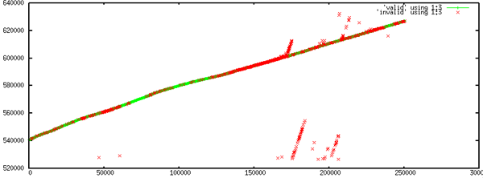
<br /><br />
Zooming in to a window of about 400 second period of time shows how
the algorithm does a pretty good job removing packets that are close,
but not quite on the general time curve.  It looks like I have one
time record that I should have removed, but I think that will go away
with some tuning.
<br /><br />
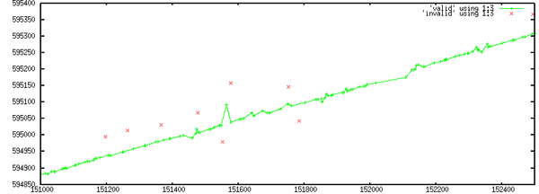
<br /><br />
Here is my algorithm for each packet in the sequence:
<br /><br />
Go through all the point and mark as invalid any time that is more than minutes away from the timestamp.  I have seen errors of up to 80 seconds in the datalogging systems timestamping.
<br /><br />
From here on forward, I only consider packets that have not already been flagged as invalid.
<br /><br />
I then walk the data in order received from one station.  Look back
over the last N points.  These should be all have times that are
older.  Stop looking at packets when they are more than 60 seconds
older than the current packet.  Count how many are newer than a buffer
time (using 10 seconds now).  If I get more than a critical number of
future packets, then I flag the point as invalid.
<br /><br />
I then flip this around and look forward.  This is a bit more risky.
An unflagged bad point could stop my search before I realize that it
is bad by triggering the search to stop by being too far in the future.
Packets ahead in the stream (received in a later slot) should have
newer times.  If we see too many old packets, then this packet thinks
it is newer than it really is.  I am wondering if I should look
backwards across the whole data set first, rather alternating looking backward and forward.
<br /><br />
Right now, I only look at the next 10 valid points in each direction
and clip this if the data is too sparse in time; I only scan up to 200
received messages out and up to 60 seconds.  With the 10 second delta
time parameter, that gives me 4 degrees of freedom to tune.  Here is a
quick illustration of looking to either side in the data.  They show the
direction in which they were found to be bad.
<br /><br />
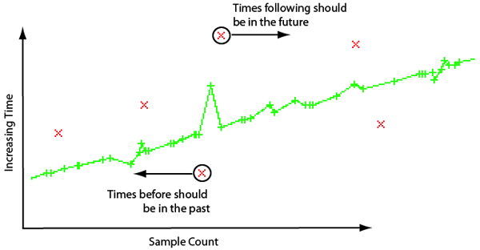
</div>
</div>

<div class="posted">
<br />Posted by <span class="item-creator">Kurt</span>
| <a class="link" href="2009-08.html#e2009-08-25T19_20_13.txt">Permalink</a>

<!-- <br /><a href="archives/2009-08-26T11_26_26.html#comments">Comments</a> -->
</div>
</div>
<div class="item">
<a id="e2009-08-25T06_40_25.txt" name="e2009-08-25T06_40_25.txt"></a>
<h2 class="date">08.25.2009 06:40</h2>
<div class="blogbody">
<h3 class="title">More Space Based AIS (S-AIS)</h3>
<div class="item-description">
<a href="http://www.thedigitalship.com/DSmagazine/DigitalShipSep09.pdf">This month's Digital Ship</a> has an article about Space-based AIS
(S-AIS).  The article focuses on COM-DEV International's <a href="http://www.exactearth.com/">exactEarth</a>
subsidiary and their exactAIS product.
<pre>"Our system, proven in orbit, can detect 1,000 ships in less than 90
seconds," said Mr Mabson.
...
COM DEV says that a satellite picking up AIS transmissions can see an
area of about 5,000km at any one time, covering that space for about
10 minutes.
...
"AIS has been an extremely successful maritime implementation, there
are now more than 70,000 AIS transponders on ships, the system is
rugged, there are many manufacturers of transponders and it's a
well-proven system," he said.</pre>
I haven't seen any data from COM DEV to be able to judge the system.
Then end goal is apparently is total of 6 small satellites.
</div>
</div>

<div class="posted">
<br />Posted by <span class="item-creator">Kurt</span>
| <a class="link" href="2009-08.html#e2009-08-25T06_40_25.txt">Permalink</a>

<!-- <br /><a href="archives/2009-08-25T19_20_13.html#comments">Comments</a> -->
</div>
</div>
<div class="item">
<a id="e2009-08-24T12_58_31.txt" name="e2009-08-24T12_58_31.txt"></a>
<h2 class="date">08.24.2009 12:58</h2>
<div class="blogbody">
<h3 class="title">AIS time from position messages</h3>
<div class="item-description">
I've been working on how best to produce a sense of time for received
AIS messages where the time stamps on the receiver either do not exist
or are untrustworthy.  One thing that I assume for an individual
receiver is that the messages come out of the receiver in the same
order that they came out of the VHF Data Link (VHF).  AIS Class A
position messages all send their sense of the seconds of the minute
from the vessel's GPS.  If the vessel is operating in SOTDMA mode,
every 8th packet should also include the hour and minutes.  
<br /><br />
I started by taking a look at two minutes of data from a space based
receiver (AprizeSat-3) and see what looks like a fairly rosy looking
picture.  I plotted the received packet count across the bottom and
the seconds timestamp on the y-axis.  Red "+" symbols are messages
with just the seconds of the minute and the green "x" symbols are the
reports that include hour and minute.  The two major groups show that
ships are reporting a sense of time that ranges about 5 seconds.  This
is likely delays in getting from assembling a packet to getting it
transmitted.  There are a small percentage of reports that do not fit
the basic line.  These outliers likely have a very poor sense of time
or there is something wrong with the AIS transceiver.  The points with
seconds of 60 seconds or higher know they have a poor sense of time:
<pre>60 - time stamp is not available
61 - positioning system in manual input mode
62 - dead reckoning mode
63 - positioning system is inoperative)</pre>
Reporting that you don't know is a perfectly valid thing to do.  Reporting
that you know, but you really don't know, is a "bad thing."
<br /><br />
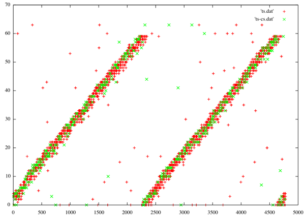
<br /><br />
With that promissing picture, I took a look at one receiver in the Boston
area.  This receiver can't hear downtown boston, so it doesn't have
that many ships.  Here is 10000 samples from the receiver.  You can
clearly see the minutes ticking over.  You can also see the slope of
the lines changes as the number of reported vessels changes.  More
vessels gives a lower slope, as the x-axis is number of samples (not
time).
<br /><br />
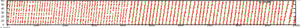
<br /><br />
Looking closer, we can see that there are two trails of time that are
offset by about 10 seconds.
<br /><br />
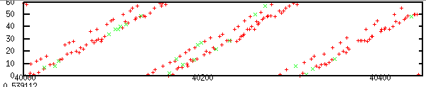
<br /><br />
I tried to come up with reasonable ways to keep track of when the
minutes tick over.  Then if I assume that this ship is reporting its
position with a proper second with a transmission delay, I can
generate a valid time for each report.  I took a running average that
is 60% of the average samples per minute.  I can calculate this
because I know I am looking at 24 hours of data (+/- a couple
minutes).
<pre>./find_time.py
cg_t_min: 2008-04-07 03:57:20
cg_t_max: 2008-04-08 03:57:37
duration_mins: 1440.28
num_samples: 211830
ave_samples_per_min: 147.08
window_len: 88</pre>
In the next two plots (just with different vertical stretches), I have
plotted the window average and std deviation.  The peak of the running
average is right before the beginning of seeing ships with the next
minute.  This is likely an early best estimate of the minute
transition.  A likely better match would be the peak of the standard
deviation, but we have to look back 1/2 the window size to get the
sample that best matches the transition.  This will only work if there
is a roughly consistent number of ships.  A rapid change in number of
ships will throw this off.
<br /><br />
There is a very strange separation of time in the middle of the
minute, where this time seems to separate.  I am not sure yet what is
going on.
<br /><br />
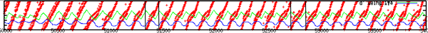
<br /><br />
Slight different picks of the transiotion to show how things line up.
<br /><br />
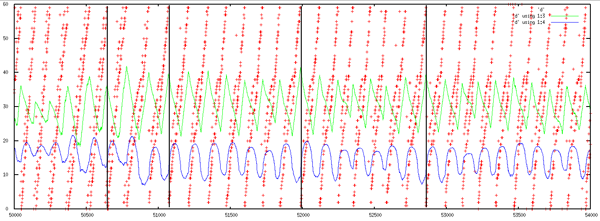
<br /><br />
Thanks to Maria, Matt, Monica, and Tom for suggestions on how to look
at this data.
</div>
</div>

<div class="posted">
<br />Posted by <span class="item-creator">Kurt</span>
| <a class="link" href="2009-08.html#e2009-08-24T12_58_31.txt">Permalink</a>

<!-- <br /><a href="archives/2009-08-25T06_40_25.html#comments">Comments</a> -->
</div>
</div>
<div class="item">
<a id="e2009-08-24T10_36_43.txt" name="e2009-08-24T10_36_43.txt"></a>
<h2 class="date">08.24.2009 10:36</h2>
<div class="blogbody">
<h3 class="title">SF Mapping - Federal Stimulus</h3>
<div class="item-description">
<pre>$3 MILLION IN FED. STIMULUS MONEY TO FUND
BAY AREA UNDERSEA MAPPING PROJECT
<!-- -->
California is receiving $3 million in federal stimulus money for an
undersea mapping project in the San Francisco Bay Area, federal
officials have announced.  ... The research surveys will map the sea
floor, measure water depth, identify storm debris and wreckage, and
identify coastal seabeds and fragile aquatic life, according to the
U.S. Commerce Department, which includes NOAA.  The Commerce
Department said the projects will create jobs, support marine commerce
and trade, and help coastal planning efforts.  The Bay Area surveys
will encompass about 112 square miles as part of a multi-year effort
to create the first comprehensive maps of the state's seafloor and
marine resources, according to the department.
<!-- -->
CONTACT: Shannon Gilson, Commerce Department (202) 482-2237
         David Miller, NOAA (202) 482-0013
         John Ewald, NOAA (240) 595-0640</pre>
</div>
</div>

<div class="posted">
<br />Posted by <span class="item-creator">Kurt</span>
| <a class="link" href="2009-08.html#e2009-08-24T10_36_43.txt">Permalink</a>

<!-- <br /><a href="archives/2009-08-24T12_58_31.html#comments">Comments</a> -->
</div>
</div>
<div class="item">
<a id="e2009-08-22T13_22_27.txt" name="e2009-08-22T13_22_27.txt"></a>
<h2 class="date">08.22.2009 13:22</h2>
<div class="blogbody">
<h3 class="title">noaadata 0.43</h3>
<div class="item-description">
My ais code library has a new version: 
<br /><br />
<a href="http://vislab-ccom.unh.edu/~schwehr/software/noaadata/downloads/noaadata-py-0.43.tar.bz2">noaadata-py-0.43.tar.bz2</a>
<ul>
  <li>ais_normalize now generates proper checksums.  plus code cleanup</li>
  <li>ais_build_sqlite:</li>
  <ul>
    <li>Now validates checksums</li>
    <li>Msgs 1-4 now do commstate</li>
    <li>suggest at least one sql index</li>
    <li>Don't crash on short lines</li>
    <li>Added messge 19 for class B</li>
    <li>Better handling of uscg metadata.  Still not handling them all</li>
  </ul>
  <li>Added ais msg 11 to decoding</li>
  <li>Msgs 1-4 are now hand coded to read comm state</li>
  <li>ais/__init__.py now has proper names for messages 11,13,16,17, and 22</li>
  <li>Added these uscg metadata fields to db: cg_s_rssi, cg_d_strength, cg_t_arrival, cg_s_slotnum</li>
  <li>aisutils/uscg.py: loosed regex to match bad T messages.  Doced all field types</li>
  <li>Template is more better.  Input from Trey Smith</li>
  <li>ais_liststations.  cleanup and progress counts</li>
  <li>ais_position_in_polygon gives a better error message when pcl-core is missing.  Still need to switch to shapely</li>
  <li>New scripts: ais_nmea_info.py, ais_nmea_remove_dups.py, ais_nmea_uptime.py, ais_sqlite_bsreport_analysis.py</li>
  <li>ais/commstate handles parsing of the SOTDMA and ITDMA commstates</li>
</ul>
</div>
</div>

<div class="posted">
<br />Posted by <span class="item-creator">Kurt</span>
| <a class="link" href="2009-08.html#e2009-08-22T13_22_27.txt">Permalink</a>

<!-- <br /><a href="archives/2009-08-24T10_36_43.html#comments">Comments</a> -->
</div>
</div>
<div class="item">
<a id="e2009-08-21T14_28_04.txt" name="e2009-08-21T14_28_04.txt"></a>
<h2 class="date">08.21.2009 14:28</h2>
<div class="blogbody">
<h3 class="title">Guest blogging on DisasterCam blog</h3>
<div class="item-description">
Last week, I wrote a guest blog post for the NASA Ames GeoCam.  It's
up on their GeoCam / DisasterCam blog.  I visited Ames to collaborate
on coding and to see about using the Google Phone for passing realtime
information with NOAA disaster response groups (e.g. ERMA) and to give
out whale position notices.
<br /><br />
<a href="http://disastercam.blogspot.com/2009/08/sonoma-air-attack-20090807.html">Sonoma Air Attack 2009/08/07</a> [disastercam.blogspot.com]
<br /><br />

<br /><br />

</div>
</div>

<div class="posted">
<br />Posted by <span class="item-creator">Kurt</span>
| <a class="link" href="2009-08.html#e2009-08-21T14_28_04.txt">Permalink</a>

<!-- <br /><a href="archives/2009-08-22T13_22_27.html#comments">Comments</a> -->
</div>
</div>
<div class="item">
<a id="e2009-08-21T10_53_40.txt" name="e2009-08-21T10_53_40.txt"></a>
<h2 class="date">08.21.2009 10:53</h2>
<div class="blogbody">
<h3 class="title">Large gas plume off of northern California</h3>
<div class="item-description">
Jim Gardner here at CCOM and the crew of the NOAA Okeanos Explorer
recently discovered a large gas plume in the water column off of
northern California.  More weight to the argument that collecting full
water column data with multibeam sonars can be really important.
<br /><br />
If you have AGU membership and can pull EOS electronically (I can't for some reason), the article is in <a href="http://www.agu.org/pubs/eos/eo0932.shtml">EOS V 90, N 32, 11 Aug</a>
<br /><br />
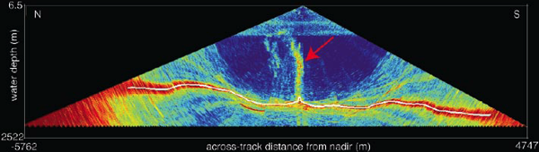
<br /><br />
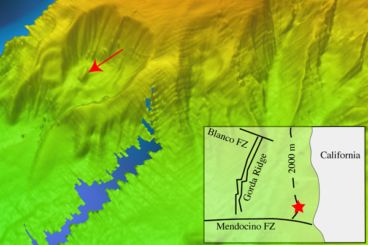
<br /><br />
There are movies made with the new mid-water functionality in
Fledermaus 7 that shows the plume in 3D.  (Based on Roland's
technology development in GeoZui4D)
<br /><br />
<a
href="http://ccom.unh.edu/NOAA_oceanexploration/">Movies directory at CCOM</a>
<br /><br />
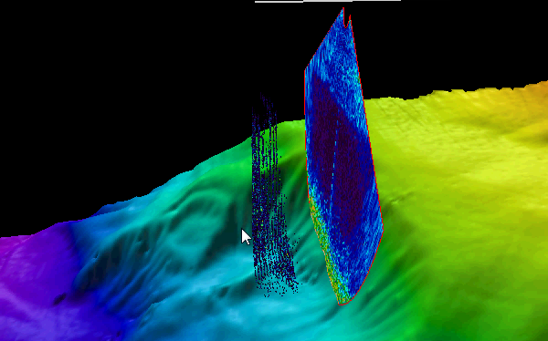
<br /><br />
<object width="425" height="344"><param name="movie" value="http://www.youtube.com/v/RS36dg_84xk&hl=en&fs=1&color1=0x006699&color2=0x54abd6"></param><param name="allowFullScreen" value="true"></param><param name="allowscriptaccess" value="always"></param><embed src="http://www.youtube.com/v/RS36dg_84xk&hl=en&fs=1&color1=0x006699&color2=0x54abd6" type="application/x-shockwave-flash" allowscriptaccess="always" allowfullscreen="true" width="425" height="344"></embed></object>
<br /><br />
<object width="425" height="344"><param name="movie" value="http://www.youtube.com/v/CHde90jX-30&hl=en&fs=1&color1=0x006699&color2=0x54abd6"></param><param name="allowFullScreen" value="true"></param><param name="allowscriptaccess" value="always"></param><embed src="http://www.youtube.com/v/CHde90jX-30&hl=en&fs=1&color1=0x006699&color2=0x54abd6" type="application/x-shockwave-flash" allowscriptaccess="always" allowfullscreen="true" width="425" height="344"></embed></object>
<br /><br />
<b>Trackback</b>: All the details of the video area available here - <a href="http://www.ivs3d.com/news/noaa_plume.php">IVS3D - 1400 Meter Plume Discovered off the Northern California Coast</a>
</div>
</div>

<div class="posted">
<br />Posted by <span class="item-creator">Kurt</span>
| <a class="link" href="2009-08.html#e2009-08-21T10_53_40.txt">Permalink</a>

<!-- <br /><a href="archives/2009-08-21T14_28_04.html#comments">Comments</a> -->
</div>
</div>
<div class="item">
<a id="e2009-08-20T16_22_58.txt" name="e2009-08-20T16_22_58.txt"></a>
<h2 class="date">08.20.2009 16:22</h2>
<div class="blogbody">
<h3 class="title">Spaced Based AIS (S-AIS)</h3>
<div class="item-description">
Last week, I took my first look at Space-based AIS (S-AIS).  For this
quick visualization, I used 2 minutes of data from <a href="http://www.spacequest.com/">SpaceQuest</a>'s two
AprizeSat receivers.  In two minutes, they collected about 7000 class
A position reports with up to 22 reports from each ship and a total of
121 unique MMSIs.  Nice!
<br /><br />
<a href="http://www.spacequest.com/">SpaceQuest</a> just presented these results at TExAS III.
<br /><br />
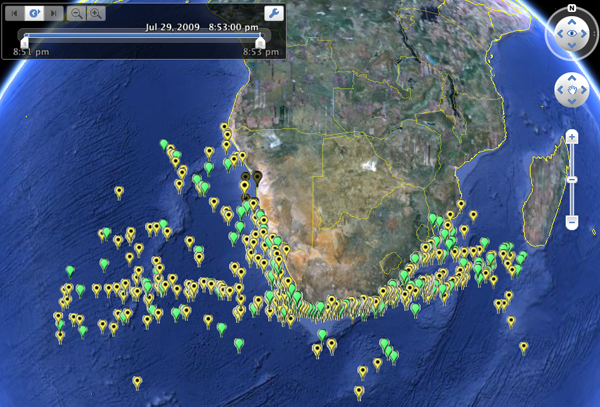
<br /><br />

<br /><br />
<a href="../attachments/2009-08/S-AIS-AprizeSat-20090729.kmz">S-AIS-AprizeSat-20090729.kmz</a>
</div>
</div>

<div class="posted">
<br />Posted by <span class="item-creator">Kurt</span>
| <a class="link" href="2009-08.html#e2009-08-20T16_22_58.txt">Permalink</a>

<!-- <br /><a href="archives/2009-08-21T10_53_40.html#comments">Comments</a> -->
</div>
</div>
<div class="item">
<a id="e2009-08-19T11_32_20.txt" name="e2009-08-19T11_32_20.txt"></a>
<h2 class="date">08.19.2009 11:32</h2>
<div class="blogbody">
<h3 class="title">USCG T flag time base means what?</h3>
<div class="item-description">
I was looking to use the USCG "T" metadata field to help check the validity of the sense of time for an AIS messages,
but then I ran into this triplet of basestation report receives.  This is the same message received at 3 receivers
in the Boston area.  "T" is supposed to be the receive time seconds within the UTC minute.
<pre>!AIVDM,1,1,,B,403OwliuQ3SqiJs&lt;SHH&gt;jB100L0B,0*3C,s34022,d-075,<b>T40.92853791</b>,x123864,r003669945,1207540670
!AIVDM,1,1,,B,403OwliuQ3SqiJs&lt;SHH&gt;jB100L0B,0*3C,s28210,d-096,<b>T11.02029935</b>,x84922,r003669947,1207540645
!AIVDM,1,1,,B,403OwliuQ3SqiJs&lt;SHH&gt;jB100L0B,0*3C,s29329,d-096,<b>T50.26997285</b>,x64858,r003669946,1207540666</pre>
I dropped that section of messages in a SQLite db to take a look at what is going on.
<pre><b>ais_build_sqlite.py -d trouble.db3 trouble.ais -C</b>
{1: <b>14</b>, 2: 0, 3: 0, 4: <b>5</b>, 5: 0, 18: 0, 19: 0}</pre>
Pulling the reports:
<pre>sqlite3 -html trouble.db3 \
  'SELECT key, UserID as MMSI, \
          Time_day as day, Time_hour as hour, Time_min as min, Time_sec AS sec, \
          sync_state, slot_timeout, received_stations, cg_timestamp, \
          cg_t_arrival, cg_r \
   FROM bsreport WHERE userid=3669971;'</pre>
Here is what I see for those three basestation reports:
<table border="1">
<TR><TH>key</TH><TH>MMSI</TH><TH>day</TH><TH>hour</TH><TH>min</TH><TH>sec</TH><TH>sync_state</TH><TH>slot_timeout</TH><TH>received_stations</TH><TH>cg_timestamp</TH><TH>cg_t_arrival</TH><TH>cg_r</TH></TR>
<TR><TD>3</TD>
<TD>3669971</TD>
<TD>7</TD>
<TD>3</TD>
<TD>57</TD>
<TD>49</TD>
<TD>0</TD>
<TD>7</TD>
<TD>18</TD>
<TD>2008-04-07 03:57:50</TD>
<TD>40.92853791</TD>
<TD>r003669945</TD>
</TR>
<TR><TD>4</TD>
<TD>3669971</TD>
<TD>7</TD>
<TD>3</TD>
<TD>57</TD>
<TD>49</TD>
<TD>0</TD>
<TD>7</TD>
<TD>18</TD>
<TD>2008-04-07 03:57:25</TD>
<TD>11.02029935</TD>
<TD>r003669947</TD>
</TR>
<TR><TD>5</TD>
<TD>3669971</TD>
<TD>7</TD>
<TD>3</TD>
<TD>57</TD>
<TD>49</TD>
<TD>0</TD>
<TD>7</TD>
<TD>18</TD>
<TD>2008-04-07 03:57:46</TD>
<TD>50.26997285</TD>
<TD>r003669946</TD>
</TR>
</table>
I will abbreviate station names by the last two digits... 45, 46, and
47.  It looks like station 45 timestamped the the packet as 1 second after it was sent.
That's pretty good.  However the receiver generated the T as 9 seconds earlier than the
station timestamp and 8 seconds <b>before</b> the basestation thinks it generated the message.
This looks like the receiver doesn't have a good sense of time.
<br /><br />
Looking at station 47 next, things totally come apart.  The USCG
timestamp is 24 seconds before the basestation thinks it sent the
message and the T receive time is either 38 or 22 seconds off
(assuming that the it is less than one minute off.
<br /><br />
Taking a look at the comm state of a SOTDMA Class A position report in
that batch of data, it shows that things for station 45 are at least
consistant.
<pre>SELECT commstate_utc_hour, commstate_utc_min as com_min, timestamp as sec, cg_timestamp, 
	cg_t_arrival, cg_r 
    FROM position 
    WHERE commstate_utc_hour IS NOT NULL;</pre>
<table border="1">
<TR><TH>commstate_utc_hour</TH><TH>com_min</TH><TH>sec</TH><TH>cg_timestamp</TH><TH>cg_t_arrival</TH><TH>cg_r</TH></TR>
<TR><TD>3</TD>
<TD>57</TD>
<TD>48</TD>
<TD>2008-04-07 03:57:52</TD>
<TD>42.90231408</TD>
<TD>r003669945</TD>
</TR>
</table>
There doesn't appear to be a way to track the receivers' GPS locks so that I can know when to trust the T field.
</div>
</div>

<div class="posted">
<br />Posted by <span class="item-creator">Kurt</span>
| <a class="link" href="2009-08.html#e2009-08-19T11_32_20.txt">Permalink</a>

<!-- <br /><a href="archives/2009-08-20T16_22_58.html#comments">Comments</a> -->
</div>
</div>
<div class="item">
<a id="e2009-08-18T23_31_57.txt" name="e2009-08-18T23_31_57.txt"></a>
<h2 class="date">08.18.2009 23:31</h2>
<div class="blogbody">
<h3 class="title">List of possible ferry vessels from AIS</h3>
<div class="item-description">
The shipandcargo field in AIS message 5 (shipdata or "static" ship
data) mixes the type of ship and what it is doing.  This makes it
sometimes impossible to pull a class of vessel.  We can use the
message 5 to narrow down the possibilities.  Over the past week, I
have been trying to figure out how to come up with the best list of
ferry vessels in the US and Canada (including the Great Lakes).  I
know I will miss those in places like Lake Tahoe and ships like the Mt
Washington in Lake Winnipesaukee.  But this is the best I have come up
with so far.  (I'm leaving out any ferries that might be using Class B
AIS).
<br /><br />
First, I need to extract all unique type 5 messages that I've received.
I have data logged as PREFIX-YYYY-MM-DD.bz2
<pre>#!/bin/bash
for file in *20[0-9][0-9]-??-??.bz2; do 
    basename=`basename $file`
    basename=${basename%%.bz2}
    basename=${basename##prefix}
    echo $basename
    tmp=$basename.norm
<!-- -->
    bzcat $file | ais_normalize.py > $tmp
<!-- -->
    # Lookback:  125 stations * 1000 messages = 125000
    egrep 'AIVDM,1,1,[0-9]?,[AB],5' $tmp | ais_nmea_remove_dups.py -v -l 100000 &gt; $basename.5.unique
done</pre>
In the above script, I first normalize the AIS messages such that they
all take just one line.  Then I use egrep to pull just msg 5
(shipdata).  I pass that to ais_nmea_remove_dups that looks at the payload of each message and passes only one copy of each message payload - the 5th field - in bold:
<pre>!AIVDM,1,1,9,A,<b>576uEH02&gt;rgMI8AON20PTLR1&lt;5AE8r222222221@B`R:F5Jo0AS3lhCQiC1DvmDhH888880</b>,2*35,s25682,d-105,T30.27102750,x179634,r11CSDO1,1242917069</pre>
I then run that same duplicate removal process on all the days combined together and put them in an SQLite database:
<pre>cat *.5.unique |  ais_nmea_remove_dups.py -v -l 100000 &gt; 5.unique.nmea
ais_build_sqlite.py -C -d 5.unique.db3 5.nmea
{1: 0, 2: 0, 3: 0, 4: 0, 5: 92895, 18: 0, 19: 0}
</pre>
Not that I started with 94118 message 5 lines.  I'm seeing about 1.3% of
the messages being undecodable receives of the wrong message length.
<br /><br />
Now I can start doing SQL queries to pull apart the data.  The first
route is to look for self declared high speed craft or passenger
vessels.  Ferries, like the Cat, can be either a passenger (60-69) or
highspeed (40) craft, but not both in a message 5.
<pre><b>sqlite3 5.unique.db3 'SELECT shipandcargo,count(*) FROM shipdata WHERE shipandcargo in (40,60,61,62,63,64,65,66,67,68,69) GROUP BY shipandcargo;'</b>
shipandcargo    count(*)
40      535
60      5876
61      104
62      67
63      47
64      278
65      10
66      45
67      40
68      243
69      3374</pre>
The next thing is to bring in the flag under which the vessel is registered.  This is given by the 1st three numbers of the MMSI (aka UserID).  To get this number from a database record, just devide the MMSI by 1,000,000 (thanks to BRC for this trick).  Loading the mmsi table:
<pre>sqlite3  5.unique.db3 &lt; /Users/schwehr/projects/src/noaadata/data/mmsi_prefix.sql</pre>
Now do a LEFT JOIN to list vessel info and registry flag:
<pre><tt><b><font color="#0000FF">SELECT</font></b> userid <b><font color="#0000FF">AS</font></b> mmsi<font color="#990000">,</font> name<font color="#990000">,</font> callsign<font color="#990000">,</font> imonumber<font color="#990000">,</font> shipandcargo<font color="#990000">,</font>
       dima<font color="#990000">+</font>dimb <b><font color="#0000FF">AS</font></b> width<font color="#990000">,</font> dimc<font color="#990000">+</font>dimd <b><font color="#0000FF">AS</font></b> length<font color="#990000">,</font> synonym <b><font color="#0000FF">AS</font></b> flag 
       <b><font color="#0000FF">FROM</font></b> shipdata
       <b><font color="#0000FF">LEFT</font></b> <b><font color="#0000FF">JOIN</font></b> mmsi_prefix <b><font color="#0000FF">ON</font></b> mmsi_prefix<font color="#990000">.</font>code<font color="#990000">==</font>shipdata<font color="#990000">.</font>userid<font color="#990000">/</font><font color="#993399">1000000</font> 
       <b><font color="#0000FF">WHERE</font></b> shipandcargo <b><font color="#0000FF">IN</font></b> <font color="#990000">(</font><font color="#993399">40</font><font color="#990000">,</font><font color="#993399">60</font><font color="#990000">,</font><font color="#993399">61</font><font color="#990000">,</font><font color="#993399">62</font><font color="#990000">,</font><font color="#993399">63</font><font color="#990000">,</font><font color="#993399">64</font><font color="#990000">,</font><font color="#993399">65</font><font color="#990000">,</font><font color="#993399">66</font><font color="#990000">,</font><font color="#993399">67</font><font color="#990000">,</font><font color="#993399">68</font><font color="#990000">,</font><font color="#993399">69</font><font color="#990000">)</font> 
       <b><font color="#0000FF">GROUP</font></b> <b><font color="#0000FF">BY</font></b> mmsi<font color="#990000">,</font>name<font color="#990000">;</font></tt></pre>
The LEFT JOIN is critical as some of the vessels do not have matching entries in the MMSI prefix table.
<pre>1193046,"SAMUEL S COURSEN@@@@",WDB3537,303174162,60,55,19,Null
1193046,"SAMUEL S CURSEN@@@@@",WDB3537,303174162,60,55,19,Null
3160015,"LADY WHITE HEAD     ","VC8150 ",7947960,60,34,10,Null
4490052," @LWHA              ","WY397P ",8835358,60,116,22,Null
31602656,"TANDEM              ",CFB5593,813929,69,20,7,Null
35516535,"P/B WANDERER        ",@@@@@@@,0,64,15,6,Null
35517401,"P/B PHANTOM         ",@@@@@@@,0,69,20,6,Null
36677150,"NAPA                ",WDE8110,0,60,38,10,Null
100000000,"BRITANNIA           ","VY5348 ",0,60,0,0,Null
100000001,@@@@@@@@@@@@@@@@@@@@,@@@@@@@,100000001,60,53,7,Null
107502700,"ROBERT H. DEDMAN    ",WCY9892,920700300,69,83,23,Null
111111111,"BLUE ICE            ",WCW8492,1111111,60,0,0,Null
111850000,"FAST BULLET         ",WDA8488,366854890,60,50,10,Null
123456789,"GOOSE BUMPS         ","KUME   ",123456787,60,30,6,Null
123456789,"MADDEN TIDE@@@@@@@@@",WCX9599,0,60,0,0,Null
203888479,@@@@@@@@@@@@@@@@@@@@,@@@@@@@,0,61,0,0,Austria
235762000,"QUEEN MARY 2        ","GBQM   ",9241061,60,345,41,"United Kingdom"
244078000,STATENDAM@@@@@@@@@@@,PHSG@@@,8919245,69,220,30,Netherlands
...</pre>
Vessels with bad MMSI settings in their transcievers must be discarded.
In the position reports, the MMSI is the only distinguishing value, so 
we will be unable to tell them from other vessels with that same error.
<br /><br />
The next thing we can do is to use knowledge about how ferries have to
operate in the US.  They have to be registered with the United States,
so we can reject any ship that is not registered to the United States,
Canada, or Alaska as not possibly being a ferry.  (I hope this is
really true.)
<br /><br />
We can therefor add "AND userid/1000000 in (303,316,338,358,366,367,368,369,379)" to the query:
<pre>SELECT code,synonym FROM mmsi_prefix 
   WHERE code IN (303,316,338,358,366,367,368,369,379);
code    synonym
303     Alaska
316     Canada
338     United States
358     Puerto Rico
366     United States
367     United States
368     United States
369     United States
379     United States Virgin Islands</pre>
The final query is:
<pre><tt><b><font color="#0000FF">SELECT</font></b> userid <b><font color="#0000FF">AS</font></b> mmsi<font color="#990000">,</font> name<font color="#990000">,</font> callsign<font color="#990000">,</font> imonumber<font color="#990000">,</font> shipandcargo<font color="#990000">,</font>
       dima<font color="#990000">+</font>dimb <b><font color="#0000FF">AS</font></b> width<font color="#990000">,</font> dimc<font color="#990000">+</font>dimd <b><font color="#0000FF">AS</font></b> length<font color="#990000">,</font> synonym <b><font color="#0000FF">AS</font></b> flag 
       <b><font color="#0000FF">FROM</font></b> shipdata 
       <b><font color="#0000FF">LEFT</font></b> <b><font color="#0000FF">JOIN</font></b> mmsi_prefix <b><font color="#0000FF">ON</font></b> mmsi_prefix<font color="#990000">.</font>code<font color="#990000">==</font>shipdata<font color="#990000">.</font>userid<font color="#990000">/</font><font color="#993399">1000000</font> 
       <b><font color="#0000FF">WHERE</font></b> shipandcargo <b><font color="#0000FF">IN</font></b> <font color="#990000">(</font><font color="#993399">40</font><font color="#990000">,</font><font color="#993399">60</font><font color="#990000">,</font><font color="#993399">61</font><font color="#990000">,</font><font color="#993399">62</font><font color="#990000">,</font><font color="#993399">63</font><font color="#990000">,</font><font color="#993399">64</font><font color="#990000">,</font><font color="#993399">65</font><font color="#990000">,</font><font color="#993399">66</font><font color="#990000">,</font><font color="#993399">67</font><font color="#990000">,</font><font color="#993399">68</font><font color="#990000">,</font><font color="#993399">69</font><font color="#990000">)</font> 
           <b><font color="#0000FF">AND</font></b> userid<font color="#990000">/</font><font color="#993399">1000000</font> <b><font color="#0000FF">IN</font></b> <font color="#990000">(</font><font color="#993399">303</font><font color="#990000">,</font><font color="#993399">316</font><font color="#990000">,</font><font color="#993399">338</font><font color="#990000">,</font><font color="#993399">358</font><font color="#990000">,</font><font color="#993399">366</font><font color="#990000">,</font><font color="#993399">367</font><font color="#990000">,</font><font color="#993399">368</font><font color="#990000">,</font><font color="#993399">369</font><font color="#990000">,</font><font color="#993399">379</font><font color="#990000">)</font> 
       <b><font color="#0000FF">GROUP</font></b> <b><font color="#0000FF">BY</font></b> mmsi<font color="#990000">,</font>name<font color="#990000">;</font></tt></pre>
A little cleaning and using "sqlite3 -csv" give this result:
<pre> mmsi,name,callsign,IMOnumber,shipandcargo,width,length,flag
303267000,"TUSTUMENA","WNGW",6421086,60,90,18,Alaska
303472000,"ISLAND CAPER",WAM9248,0,60,29,6,Alaska
303488000,"BERNIE MCALL",WDC6875,936351000,60,0,0,Alaska
303509000,"SPIRIT OF YORKTOWN",WDD5898,8949472,60,68,12,Alaska
303556000,"MARITIME INSTRUCTOR",WCW8625,1033659,60,26,5,Alaska
303677000,"MISS PAMELA",WDC3158,9111254,60,40,9,Alaska
303913000,"GORDON GUNTER","WTEO",8835255,60,205,32,Alaska
316001111,"NAUTILUS EXPLORER",CFG7418,9224647,60,35,8,Canada
316001232,"BOWEN QUEEN","VGXR",6600967,69,88,18,Canada
316001234,"HOWE SOUND QUEEN","CY3842",801691,60,80,20,Canada
316001235,"KLITSA","CZ3072",0,60,52,13,Canada
...
338086000,"MISS CARISSA",WDB7801,8977699,69,39,8,"United States"
338088000,"MISS BETH",WDB7803,8977687,60,36,9,"United States"
338092962,"SEABRIGHT",,0,67,20,5,"United States"
338116000,B AP3D P AP,SD U&lt;P4,9265809,40,36,14,"United States"
338116000,FAIRWEATHER,WDB5604,9265809,40,72,22,"United States"
338117000,"JENNY MCCALL",WDC3101,931679900,60,54,11,"United States"
338163000,COPACABANA,WDE6748,1214699,60,53,9,"United States"
338194000,"PHILIP ALAN MCCALL",WDB7424,108745800,60,51,10,"United States"
338195000,"MATANUSKA","WN4201",5228827,69,124,22,"United States"
...</pre>
There are some doubles because of operator error.  For example:
<pre>316011408,"COASTAL INSPIRATION",CFN4970,9332767,69,160,28,Canada
316011408,"<b>COAUTAL</b> INSPIRATION",CFN4970,9332767,69,160,28,Canada</pre>
and there are some likely corrupted packets:
<pre>338116000,B AP3D P AP,SD U&lt;P4,9265809,40,36,14,"United States"</pre>
Some of these are clearly cruise ships and other vessels that are really
not ferries.  It takes extra work to get down from 490 vessels to the
true set of ferry vessels.
</div>
</div>

<div class="posted">
<br />Posted by <span class="item-creator">Kurt</span>
| <a class="link" href="2009-08.html#e2009-08-18T23_31_57.txt">Permalink</a>

<!-- <br /><a href="archives/2009-08-19T11_32_20.html#comments">Comments</a> -->
</div>
</div>
<div class="item">
<a id="e2009-08-18T16_50_34.txt" name="e2009-08-18T16_50_34.txt"></a>
<h2 class="date">08.18.2009 16:50</h2>
<div class="blogbody">
<h3 class="title">AIS time sources - basestations verses ships</h3>
<div class="item-description">
There are many sources of time in AIS and not all source of time are
created equal.  Here I am comparing the USCG timestamps to the
basestation reported time and ship's time reported in the position
report communication state for 3 stations in the Boston area.  Most
users of AIS are using it for real-time collision avoidance, so they
are not concerned as concerned with timestamping.  However, we would
like to know that exact time that ships approach hydrophones in the
area.  First a graph of a while day.  On the x-axis is seconds from
the beginning of the data, while the y-axes is the difference between
the time source and the N-AIS timestamps.
<br /><br />
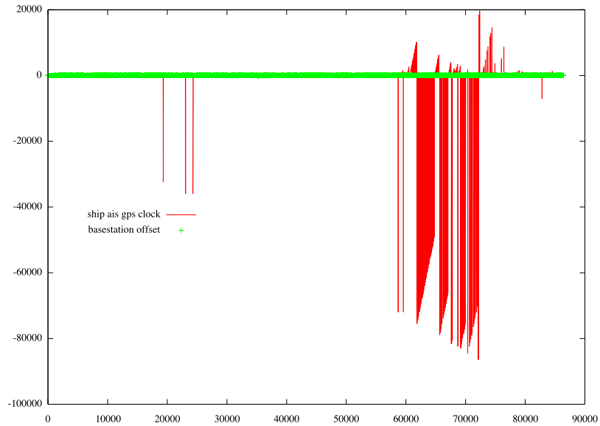
<br /><br />
Overall, the 2 base stations agree with the timestamps recorded by the
N-AIS stations within about 60 seconds (the thick green line of points
near 0 seconds).  For the most part, the clocks for all the ships in
the area are equally close to the N-AIS time and not visible behind
the mass of green.  However, late in the day, there appears to be a
lot of reports of ships' time being very far off from N-AIS.  Turns
out this is primarily just one ship having issues: <a
href="http://www.marinetraffic.com/AIS/shipdetails.aspx?mmsi=239557000">CMA
CGM ELBE</a>.  There is no way to know why it is off by up to 80000
seconds.  If anyone knows what type of AIS transceiver they have and
what likely went wrong, I would really like to know.
<br /><br />
Baring the CMA CGM ELBE, it's worth a look up close at 42 minutes of data:
<br /><br />
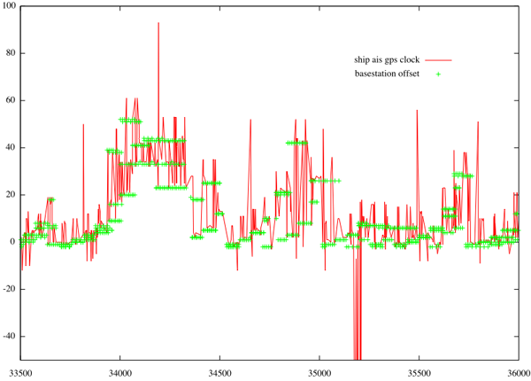
<br /><br />
Here we can see that, in general, the ships' time and basestation time is tracking pretty well.
</div>
</div>

<div class="posted">
<br />Posted by <span class="item-creator">Kurt</span>
| <a class="link" href="2009-08.html#e2009-08-18T16_50_34.txt">Permalink</a>

<!-- <br /><a href="archives/2009-08-18T23_31_57.html#comments">Comments</a> -->
</div>
</div>
<div class="item">
<a id="e2009-08-18T16_32_21.txt" name="e2009-08-18T16_32_21.txt"></a>
<h2 class="date">08.18.2009 16:32</h2>
<div class="blogbody">
<h3 class="title">Horsing around on the Healy</h3>
<div class="item-description">
Perhaps some of the crew has been away from land too long.  Scientific graffiti?
<br /><br />
<a href="http://mgds.ldeo.columbia.edu/healy/reports/aloftcon/2009/20090818-1901.jpeg">20090818-1901.jpeg</a>
<br /><br />
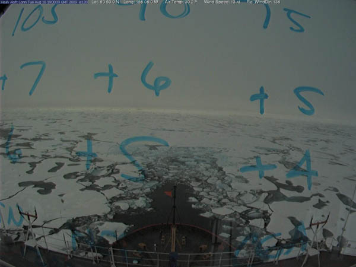
</div>
</div>

<div class="posted">
<br />Posted by <span class="item-creator">Kurt</span>
| <a class="link" href="2009-08.html#e2009-08-18T16_32_21.txt">Permalink</a>

<!-- <br /><a href="archives/2009-08-18T16_50_34.html#comments">Comments</a> -->
</div>
</div>
<div class="item">
<a id="e2009-08-18T14_38_37.txt" name="e2009-08-18T14_38_37.txt"></a>
<h2 class="date">08.18.2009 14:38</h2>
<div class="blogbody">
<h3 class="title">AIS Class A position database entries</h3>
<div class="item-description">
Since I keep needing this, here is my database cheat sheet for AIS
Class A position messages.  Note that this does not match what
ais_build_sqlite.py creates right now, but it's close.  In addition to additional fields, I'm ditching DECIMAL for REAL.
<pre><tt><b><font color="#0000FF">CREATE</font></b> <b><font color="#0000FF">TABLE</font></b> position <font color="#990000">(</font> 
	<b><font color="#0000FF">key</font></b> <font color="#009900">INTEGER</font> <b><font color="#0000FF">PRIMARY</font></b> <b><font color="#0000FF">KEY</font></b><font color="#990000">,</font>
	MessageID <font color="#009900">INTEGER</font><font color="#990000">,</font>		<i><font color="#9A1900">-- 1 or 2 for SOTDMA or 3 for ITDMA</font></i>
	RepeatIndicator <font color="#009900">INTEGER</font><font color="#990000">,</font>	<i><font color="#9A1900">-- 0 means good.  1-3 means the message has been repeated (DANGER!)</font></i>
	UserID <font color="#009900">INTEGER</font><font color="#990000">,</font>			<i><font color="#9A1900">-- MMSI</font></i>
	NavigationStatus <font color="#009900">INTEGER</font><font color="#990000">,</font>
	ROT <font color="#009900">INTEGER</font><font color="#990000">,</font>
	SOG <font color="#009900">REAL</font><font color="#990000">,</font>
	PositionAccuracy <font color="#009900">INTEGER</font><font color="#990000">,</font>
	longitude <font color="#009900">REAL</font><font color="#990000">,</font>
	latitude <font color="#009900">REAL</font><font color="#990000">,</font>
	COG <font color="#009900">REAL</font><font color="#990000">,</font>
	TrueHeading <font color="#009900">INTEGER</font><font color="#990000">,</font>
       	sec_timestamp <font color="#009900">INTEGER</font><font color="#990000">,</font>
	<i><font color="#9A1900">--RegionalReserved <font color="#009900">INTEGER</font>,	-- Replaced by the next field</font></i>
        special_manoeuvre <font color="#009900">INTEGER</font><font color="#990000">,</font>	<i><font color="#9A1900">-- 0 N/A, 1: not engaged, 2: engaged</font></i>
	Spare <font color="#009900">INTEGER</font><font color="#990000">,</font>
	RAIM <font color="#009900">BOOL</font><font color="#990000">,</font>
	sync_state <font color="#009900">INTEGER</font><font color="#990000">,</font>		<i><font color="#9A1900">-- 0 UTC direct, 1 UTC indirect, 2 sync to bs, 3 sync to mobile to bs</font></i>
	slot_timeout <font color="#009900">INTEGER</font><font color="#990000">,</font>		<i><font color="#9A1900">-- frames until new slot.  Controls comstate type</font></i>
	received_stations <font color="#009900">INTEGER</font><font color="#990000">,</font>	<i><font color="#9A1900">-- SOTDMA: # of stations this receiver hears</font></i>
	slot_number <font color="#009900">INTEGER</font><font color="#990000">,</font>		<i><font color="#9A1900">-- SOTDMA: slot number used for transmission of this message</font></i>
	commstate_utc_hour <font color="#009900">INTEGER</font><font color="#990000">,</font>	<i><font color="#9A1900">-- SOTDMA: Hour of the day</font></i>
	commstate_utc_min <font color="#009900">INTEGER</font><font color="#990000">,</font>	<i><font color="#9A1900">-- SOTDMA: UTC minutes</font></i>
	commstate_utc_spare <font color="#009900">INTEGER</font><font color="#990000">,</font>    <i><font color="#9A1900">-- SOTDMA: Should be zero</font></i>
	slot_offset <font color="#009900">INTEGER</font><font color="#990000">,</font>		<i><font color="#9A1900">-- SOTDMA: Offset to next slot used for next transmission. 0 if done talking</font></i>
	slot_increment <font color="#009900">INTEGER</font><font color="#990000">,</font>		<i><font color="#9A1900">-- ITDMA:  Offset to next slot for ITDMA.  0 if done talking</font></i>
	keep_flag <font color="#009900">INTEGER</font><font color="#990000">,</font>		<i><font color="#9A1900">-- ITDMA:  1 means keep the slot allocated for an additional frame.</font></i>
	slots_to_allocate <font color="#009900">INTEGER</font><font color="#990000">,</font>	<i><font color="#9A1900">-- ITDMA:  Slots to allocate.</font></i>
<!-- -->
        <i><font color="#9A1900">-- USCG metadata fields</font></i>
        cg_s_rssi <font color="#009900">INTEGER</font><font color="#990000">,</font>		<i><font color="#9A1900">-- 's' Receive strength indicator</font></i>
        cg_d_strength <font color="#009900">INTEGER</font><font color="#990000">,</font>		<i><font color="#9A1900">-- 'd' dBm receive strenth</font></i>
        cg_x_count <font color="#009900">INTEGER</font><font color="#990000">,</font>		<i><font color="#9A1900">-- 'x' Count of messages received by that station</font></i>
	cg_t_arrival <font color="#009900">INTEGER</font><font color="#990000">,</font>	        <i><font color="#9A1900">-- 't' HHMMSS.SS receive time</font></i>
	cg_s_slotnum <font color="#009900">INTEGER</font><font color="#990000">,</font>		<i><font color="#9A1900">-- 'S' Slot number of receive.  9999 means?</font></i>
	cg_r <font color="#009900">VARCHAR</font><font color="#990000">(</font><font color="#993399">15</font><font color="#990000">),</font>		<i><font color="#9A1900">-- Receiver or basestation name</font></i>
	cg_sec <font color="#009900">INTEGER</font><font color="#990000">,</font>			<i><font color="#9A1900">-- Unix UTC receive timestamp to second resolution</font></i>
	cg_timestamp <font color="#009900">TIMESTAMP</font> 		<i><font color="#9A1900">-- UTC time of receive to second resolution</font></i>
<font color="#990000">);</font></tt></pre>
</div>
</div>

<div class="posted">
<br />Posted by <span class="item-creator">Kurt</span>
| <a class="link" href="2009-08.html#e2009-08-18T14_38_37.txt">Permalink</a>

<!-- <br /><a href="archives/2009-08-18T16_32_21.html#comments">Comments</a> -->
</div>
</div>
<div class="item">
<a id="e2009-08-18T13_05_09.txt" name="e2009-08-18T13_05_09.txt"></a>
<h2 class="date">08.18.2009 13:05</h2>
<div class="blogbody">
<h3 class="title">python and configure like status reports</h3>
<div class="item-description">
With python 2.5 came conditionals (<a
href="http://docs.python.org/whatsnew/2.5.html#pep-308">PEP 308</a>.  In
C, conditionals look like:
<pre>char *results = (retval ? "true string" : "false string");</pre>
In python, the syntax is a bit different, but is easier to read if you
are not used to it.  Conditionals make it easy to do GNU autoconf configure
like reporting of tests (or unittest with verbose mode in python).
<pre><tt><i><font color="#9A1900">#!/usr/bin/env python</font></i>
<!-- -->
<b><font color="#000080">import</font></b> sys
<!-- -->
<b><font color="#0000FF">def</font></b> <b><font color="#000000">good</font></b><font color="#990000">():</font>
    <b><font color="#0000FF">return</font></b> True
<!-- -->
<b><font color="#0000FF">def</font></b> <b><font color="#000000">bad</font></b><font color="#990000">():</font>
    <b><font color="#0000FF">return</font></b> False
<!-- -->
<b><font color="#0000FF">print</font></b> <font color="#990000">&gt;&gt;</font> sys<font color="#990000">.</font>stderr<font color="#990000">,</font> <font color="#FF0000">'trying good...\t'</font><font color="#990000">,</font>
r <font color="#990000">=</font> <b><font color="#000000">good</font></b><font color="#990000">()</font>
<b><font color="#0000FF">print</font></b> <font color="#990000">&gt;&gt;</font> sys<font color="#990000">.</font>stderr<font color="#990000">,</font> <font color="#FF0000">'ok'</font> <b><font color="#0000FF">if</font></b> r <b><font color="#0000FF">else</font></b> <font color="#FF0000">'FAILED'</font>
<!-- -->
<b><font color="#0000FF">print</font></b> <font color="#990000">&gt;&gt;</font> sys<font color="#990000">.</font>stderr<font color="#990000">,</font> <font color="#FF0000">'trying bad...\t'</font><font color="#990000">,</font>
r <font color="#990000">=</font> <b><font color="#000000">bad</font></b><font color="#990000">()</font>
<b><font color="#0000FF">print</font></b> <font color="#990000">&gt;&gt;</font> sys<font color="#990000">.</font>stderr<font color="#990000">,</font> <font color="#FF0000">'ok'</font> <b><font color="#0000FF">if</font></b> r <b><font color="#0000FF">else</font></b> <font color="#FF0000">'FAILED'</font></tt></pre>
Running the above script looks like this:
<pre>% <b>results.py</b>
trying good...  ok
trying bad...   FAILED</pre>
</div>
</div>

<div class="posted">
<br />Posted by <span class="item-creator">Kurt</span>
| <a class="link" href="2009-08.html#e2009-08-18T13_05_09.txt">Permalink</a>

<!-- <br /><a href="archives/2009-08-18T14_38_37.html#comments">Comments</a> -->
</div>
</div>
<div class="item">
<a id="e2009-08-17T22_13_51.txt" name="e2009-08-17T22_13_51.txt"></a>
<h2 class="date">08.17.2009 22:13</h2>
<div class="blogbody">
<h3 class="title">Technical Exchange of AIS via Satellite (TExAS)</h3>
<div class="item-description">
<b>Update 18-Aug-2009</b>: <a href="http://www.gmsa.gov/twiki/bin/view/Main/TexasIII">TexasIII</a>
<br /><br />
This week is the invite only S-AIS meeting in D.C.  I'm not one of the
the attendies, but the last TExAS meeting from Sept 2008 is online:
<br /><br />
<a href="http://www.acq.osd.mil/nsso/ais/texas.htm">Technical Exchange of AIS via Satellite (TExAS) II</a>
<pre>
2. USCG National AIS Project Increment 3 - Briefer: Mr E G Lockhart
3. Volpe MSSIS/IALA.net - Briefer: Dave Phinney, Volpe Center
4. Naval Research Lab (Gladis) - Briefer: Jim Tugman, NRL
5. Analysis of Spacequest acquired AIS signals - Briefer: Dino Loenzini, Spacequest
6. Status of AIS Frequencies Nationally/Internationally - Briefer: Joe Hersey, USCG
7. Technical Limitations and Possible Solutions - Briefer: Ross Norsworthy
8. Report on AIS via COMDEV Briefer: George - Best, COMDEV
10. AIS Analyses results and standards - Briefer: Dave Pietraszewski, USCG R&D Ctr
10-2. Status of Ship Wakes - Briefer: Jake Tunaley USCG R&D Ctr
12. Radar Sat Processing Tech - Brief Briefer: Dr Jake Tunaley
13-2. TerraSar Basic Product Spec Document
14. OGMSA overview - Briefer: Guy Thomas, OGMSA</pre>
</div>
</div>

<div class="posted">
<br />Posted by <span class="item-creator">Kurt</span>
| <a class="link" href="2009-08.html#e2009-08-17T22_13_51.txt">Permalink</a>

<!-- <br /><a href="archives/2009-08-18T13_05_09.html#comments">Comments</a> -->
</div>
</div>
<div class="item">
<a id="e2009-08-17T11_15_43.txt" name="e2009-08-17T11_15_43.txt"></a>
<h2 class="date">08.17.2009 11:15</h2>
<div class="blogbody">
<h3 class="title">Neptune LNG safety zone</h3>
<div class="item-description">
<a href="http://www.lnglawblog.com/BlogEntry.aspx?_entry=391e4a0b-de60-422a-81be-d619be00b588">USCG Sets Safety Zones Around Neptune LNG Deepwater Port Submerged Turret-Loading Buoys</a>
<br /><br />
<a href="http://edocket.access.gpo.gov/2009/pdf/E9-19547.pdf">E9-19547.pdf</a>
<pre><b>SUMMARY</b>: The Coast Guard is establishing two temporary safety zones
extending 500 meters in all directions from each of the two submerged
turret- loading buoys and accompanying systems that are part of GDF
Suez Energy's Neptune Deepwater Port located in the Atlantic Ocean off
of Boston, Massachusetts. The purpose of these temporary safety zones
is to protect vessels and mariners from the potential safety hazards
associated with construction of the deepwater port facilities and the
large sub-surface turret buoys, and to protect the deepwater port
infrastructure. All vessels, with the exception of deepwater port
support vessels, are prohibited from entering into, remaining or
moving within either of the safety zones.
<!-- -->
<b>DATES</b>: This rule is effective from July 31, 2009 through February 16,
2010.
...</pre>
</div>
</div>

<div class="posted">
<br />Posted by <span class="item-creator">Kurt</span>
| <a class="link" href="2009-08.html#e2009-08-17T11_15_43.txt">Permalink</a>

<!-- <br /><a href="archives/2009-08-17T22_13_51.html#comments">Comments</a> -->
</div>
</div>
<div class="item">
<a id="e2009-08-17T10_57_53.txt" name="e2009-08-17T10_57_53.txt"></a>
<h2 class="date">08.17.2009 10:57</h2>
<div class="blogbody">
<h3 class="title">CCOM page about the current Healy cruise to the Arctic</h3>
<div class="item-description">
Here is <a
href="http://ccom.unh.edu/index.php?p=31|32|33&page=outreach/projects/healy0905/HE0905_home.php">the
CCOM HEALY 09-05 Research Cruise</a> page.  Andy Armstrong has been
sending back reports via emails over the satellite communications
systems: <a
href="http://ccom.unh.edu/index.php?p=31|32|33|34&page=outreach/projects/healy0905/HE0905_blog.php">Daily
Notes from the Arctic: A blog by Andy Armstrong, Physical
Scientist/Co-director UNH Joint Hydrographic Center</a>
<br /><br />
Some example images from the team work going on between US and Canada for joint operations doing both seismic profiling and multibeam data collection.
<br /><br />
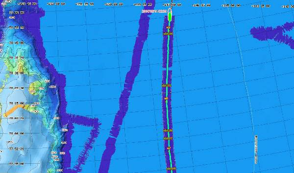
<br /><br />

<br /><br />
The <a href="http://www.usgs.gov/journals/arctic/">USGS also has a
cruise blog with an RSS feed</a> that contains many of the same posts
as what is at CCOM.
<br /><br />
And here is a great picture of the director of CCOM, just before storming the Healy:
<br /><br />
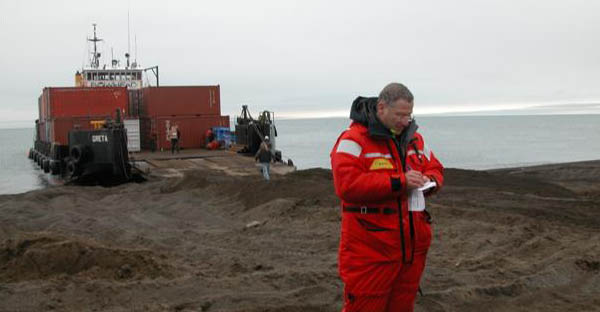
<br /><br />
Meanwhile, the rest of us CCOM are back in NH with 90&deg; F and humid weather.
</div>
</div>

<div class="posted">
<br />Posted by <span class="item-creator">Kurt</span>
| <a class="link" href="2009-08.html#e2009-08-17T10_57_53.txt">Permalink</a>

<!-- <br /><a href="archives/2009-08-17T11_15_43.html#comments">Comments</a> -->
</div>
</div>
<div class="item">
<a id="e2009-08-14T15_12_46.txt" name="e2009-08-14T15_12_46.txt"></a>
<h2 class="date">08.14.2009 15:12</h2>
<div class="blogbody">
<h3 class="title">Sqlite tricks - .sqliterc and html mode</h3>
<div class="item-description">
I am doing yet more work with sqlite and was getting annoyed with having to
setup sqlite how I like it.  The '|' is not the most friendly separator;
I do like having the column names at the top; and the NULL value should be some form of "Null" or "NULL".  I usually do:
<pre>sqlite3 foo.db
.header ON
.separator "\t"
.nullvalue "Null"</pre>
I looked at the man page for sqlite3, and it indeed does respect a .sqliterc.
I'm much happier with those defaults in there.  I also noticed that there are 
"csv" and "html" modes.  The html mode outputs the table rows, but not the
overall table, so I have to wrap the command in two echo's to get a working
(but not complete html file):
<pre>( \
  echo "&lt;table&gt;"; \
  sqlite -html 20090506-2.db3 'SELECT name,shipandcargo FROM shipdata LIMIT 10;' \
     | grep -v 'Loading resources' \
     | tr '@' ' '; \
  echo "&lt;/table&gt;" \
)  > foo.html</pre>
There are two quirks here.  First, sqlite prints out a status line that it is reading the
init script to stdout even when in non interactive mode:
<pre>-- Loading resources from /Users/schwehr/.sqliterc</pre>
Second, I'm dealing with AIS strings that have not had the no character designator, '@', scrubed
from the database.  tr does a nice job of turning those into spaces.  The results:
<table>
<TR><TH>name</TH><TH>shipandcargo</TH></TR>
<TR><TD>HELEN MORAN         </TD>
<TD>52</TD>
</TR>
<TR><TD>SHARON BRUSCO       </TD>
<TD>52</TD>
</TR>
<TR><TD>CECIL               </TD>
<TD>32</TD>
</TR>
<TR><TD>RAZORBACK           </TD>
<TD>52</TD>
</TR>
<TR><TD>LADY KATHRYN III    </TD>
<TD>37</TD>
</TR>
<TR><TD>BW HELIOS           </TD>
<TD>84</TD>
</TR>
<TR><TD>TOMMY CENAC         </TD>
<TD>52</TD>
</TR>
<TR><TD>LOCHNESS            </TD>
<TD>81</TD>
</TR>
<TR><TD>ST. PADRE PIO       </TD>
<TD>32</TD>
</TR>
<TR><TD>TERN                </TD>
<TD>70</TD>
</TR>
</table>
</div>
</div>

<div class="posted">
<br />Posted by <span class="item-creator">Kurt</span>
| <a class="link" href="2009-08.html#e2009-08-14T15_12_46.txt">Permalink</a>

<!-- <br /><a href="archives/2009-08-17T10_57_53.html#comments">Comments</a> -->
</div>
</div>
<div class="item">
<a id="e2009-08-13T10_56_39.txt" name="e2009-08-13T10_56_39.txt"></a>
<h2 class="date">08.13.2009 10:56</h2>
<div class="blogbody">
<h3 class="title">AIS and bitstuffing issues</h3>
<div class="item-description">
The whole binary message creation process is suffering from the lack
of a well thought out guide to creating messages that work well.  I
was mostly focusing on what I have to decode and hadn't been thinking
about how things were going across the network.  This means I had not
though about bit stuffing.
<br /><br />
For a single slot message, if we use all 168 bits, then we will have
room for 4 bit-stuffing additional bits.  Bit stuffing adds a 0 bit
every time there is 5 1 bits in a row.  Therefore 11111 becomes
111110.  This is generally not a big deal until you realize that most
of our default / unavailable values have been the highest value for a
field.  So for a 7 bit field, we would make unavailable be 127
(111111 going out as 11111011).  Greg pointed out that if we use 121 as
unavailable, which is fairly common, then we have a better scituation:
<pre>ipython
from BitVector import BitVector
bv = BitVector(intVal=121)
print str(bv)
'1111001'</pre>
So for safety, the unvailables should be 0 (zero) if possible.  Otherwise,
here are the values that work for the high end.
<pre>print(int(BitVector(bitstring='11101')))
29</pre>
or
<pre>print(int(BitVector(bitstring='11110')))
30</pre>
A training 1 will likely cause the next high value to generate a
bit-stuff event.  Here is a table of possible default/unknown values.
The whole point to try to keep as many messages as possible to just
1 slot.
<pre>NoBits MaxVal   Bits    Unavail   Bits    Loss-of-Range
 5       31       11111   30        11110 3%
 6       63      111111   60       111100 5%
 7      127     1111111  122      1111010 4%
 8      255    11111111  246     11110110 4%
 9      511   111111111  494    111101110 3%
10     1023  1111111111  990   1111011110 3%</pre>
I wonder when this will cause more confusion than help.  Basically, I
tried to keep no more than 4 ones in a row and make sure it is okay
if you have two of these unknowns in a row.
</div>
</div>

<div class="posted">
<br />Posted by <span class="item-creator">Kurt</span>
| <a class="link" href="2009-08.html#e2009-08-13T10_56_39.txt">Permalink</a>

<!-- <br /><a href="archives/2009-08-14T15_12_46.html#comments">Comments</a> -->
</div>
</div>
<div class="item">
<a id="e2009-08-12T20_58_14.txt" name="e2009-08-12T20_58_14.txt"></a>
<h2 class="date">08.12.2009 20:58</h2>
<div class="blogbody">
<h3 class="title">pbzip2 for parallel compression</h3>
<div class="item-description">
I just heard about <a href="http://compression.ca/pbzip2/">pbzip2</a>,
which does parallel compressing of files using pthreads.  I gave the
same 4.4G file to both bzip2 and pbzip2 on an 8-way linux box with
pbzip2 using 7 threads.  The original way I compress data:
<pre><b>time bzip2 -9 b</b>
real    17m19.233s
user    16m41.131s
sys     0m8.296s</pre>
The new parallel way:
<pre>time pbzip2 -9 -p7 a
real    2m45.526s
user    18m33.926s
sys     0m13.202s</pre>
17:19 became 2:45.  Not bad speedup.  The compressed file sizes are not
quite the same.
<pre>842988852 Aug 12 23:19 a.bz2
841630033 Aug 12 23:19 b.bz2</pre>
I uncompressed the file that I compress with pbzip2 using bzip2 to make
sure there is no loss or incompatibility and it checks out with the original
using <i>cmp</i>.  For now, I'm going to stick with bzip2 for my critical data,
but if I have to move fast, I might go for pbzip2.
</div>
</div>

<div class="posted">
<br />Posted by <span class="item-creator">Kurt</span>
| <a class="link" href="2009-08.html#e2009-08-12T20_58_14.txt">Permalink</a>

<!-- <br /><a href="archives/2009-08-13T10_56_39.html#comments">Comments</a> -->
</div>
</div>
<div class="item">
<a id="e2009-08-12T16_59_19.txt" name="e2009-08-12T16_59_19.txt"></a>
<h2 class="date">08.12.2009 16:59</h2>
<div class="blogbody">
<h3 class="title">Where is the AIS tracking info on the missing ship?</h3>
<div class="item-description">
Finding the path of the ship and what happened when up to the point
where it left European waters, should be easy... just pull the AIS
logs from one of the several tracking networks.  I don't get why they
don't know.  I do this all the time for US waters.
<br /><br />
<a href="http://news.yahoo.com/s/ap/20090812/ap_on_re_eu/eu_britain_missing_ship">Ship disappears after sail through English Channel</a>
<pre>...
On July 28, the Arctic Sea made contact with British maritime
authorities as it passed through the busy English Channel. The ship
made a routine, mandatory report - saying who they were, where they
were from, where they were going and what their cargo was. It appeared
routine, said Mark Clark of Britain's Maritime and Coastguard Agency.
...
Where the ship was next spotted is uncertain. Russian media reports
say the last contact was on July 30 when the ship was in the Bay of
Biscay, and that it was later spotted by a Portuguese patrol plane,
but there was no contact.
<!-- -->
But Portuguese Navy spokesman Commander Joao Barbosa said "we can
guarantee that the ship is not in Portuguese waters nor did it ever
pass through Portuguese waters."
...</pre>
</div>
</div>

<div class="posted">
<br />Posted by <span class="item-creator">Kurt</span>
| <a class="link" href="2009-08.html#e2009-08-12T16_59_19.txt">Permalink</a>

<!-- <br /><a href="archives/2009-08-12T20_58_14.html#comments">Comments</a> -->
</div>
</div>
<div class="item">
<a id="e2009-08-12T11_21_28.txt" name="e2009-08-12T11_21_28.txt"></a>
<h2 class="date">08.12.2009 11:21</h2>
<div class="blogbody">
<h3 class="title">Plotting in matplotlib from databases</h3>
<div class="item-description">
I've been trying to figure out how to get from data in the database to
a matplotlib graph with the least amount of typing.  I started with this:
<pre>fink install matplotlib-py26 ipython
ipython -pylab
import sqlite3
cx = sqlite3.connect('20080407.decimated.db3')
a = array( [tuple(row) for row in cx.execute('SELECT cg_offset, delta_t_sec FROM bs_time WHERE recvr=2;')] )
x = a[:,0]
y = a[:,1]
plot(x,y)</pre>
Trey suggested I just try transposing the array.  My original matrix is pairs of x,y:
<pre>a.shape
(50756, 2)
a.T.shape
(2, 50756)
a.T
array([[  2.40000000e+01,   2.50000000e+01,   3.40000000e+01, ...,
          8.63840000e+04,   8.63940000e+04,   8.64040000e+04],
       [  0.00000000e+00,  -1.00000000e+00,   0.00000000e+00, ...,
          2.00000000e+01,   2.00000000e+01,   2.00000000e+01]])</pre>
Then I can use the "*" before the array in the call to plot to expand out the first dimension of the array to be the arguments... this pulls out x and y separately.  The resulting ploting looks like:
<pre>plot(*array( [tuple(row) for row in cx.execute('SELECT cg_offset, 
      delta_t_sec FROM bs_time WHERE recvr=2;')] ).T)</pre>
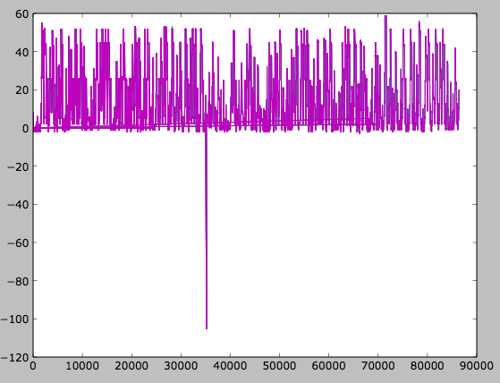
</div>
</div>

<div class="posted">
<br />Posted by <span class="item-creator">Kurt</span>
| <a class="link" href="2009-08.html#e2009-08-12T11_21_28.txt">Permalink</a>

<!-- <br /><a href="archives/2009-08-12T16_59_19.html#comments">Comments</a> -->
</div>
</div>
<div class="item">
<a id="e2009-08-12T09_34_55.txt" name="e2009-08-12T09_34_55.txt"></a>
<h2 class="date">08.12.2009 09:34</h2>
<div class="blogbody">
<h3 class="title">Hydropalooza</h3>
<div class="item-description">
I've heard a lot about Hydropalooza from NOAA folks.  Here are more details:
<br /><br />
<a href="http://www.noaanews.noaa.gov/stories2009/20090812_hydropalooza.html">'Hydropalooza' Provides Deeper Understanding of Alaska's Kachemak Bay</a>
<pre>...
Crews on board NOAA ships Fairweather and Rainier will conduct
hydrographic surveys of the seafloor, measuring depths and identifying
obstructions. When the ships complete data collection in early
September, they will have surveyed more than 350 square nautical miles
- an area nearly twice the size of Chicago.
<!-- -->
"This is one of our largest survey efforts of the year," said
Capt. Steven Barnum, director of NOAA's Office of Coast Survey and
U.S. national hydrographer. "The data we collect will contribute to
navigation safety in the state and also be used to keep the coast
healthy and productive."
...
"Our data are used by countless federal, state, and local
stakeholders,¡ said Captain Roger Parsons, NOAA Corps (ret.), IOCM
director. ´Coastline and seafloor data, once collected solely for
updating NOAA's national suite of nautical charts, is now used for
marine spatial planning efforts, ocean circulation monitoring, and
assessing the impacts of climate change, among other uses."
...</pre>
</div>
</div>

<div class="posted">
<br />Posted by <span class="item-creator">Kurt</span>
| <a class="link" href="2009-08.html#e2009-08-12T09_34_55.txt">Permalink</a>

<!-- <br /><a href="archives/2009-08-12T11_21_28.html#comments">Comments</a> -->
</div>
</div>
<div class="item">
<a id="e2009-08-11T19_28_03.txt" name="e2009-08-11T19_28_03.txt"></a>
<h2 class="date">08.11.2009 19:28</h2>
<div class="blogbody">
<h3 class="title">building a Ubuntu debian package from a source deb</h3>
<div class="item-description">
<a href="http://www.cs.cmu.edu/~trey/">Trey</a> and I are working to get some stuff packaged for Ubuntu.  What follows
is not totally perfect.  If anyone has corrections or suggestions, please
email me!
<br /><br />
We started from the Ubuntu <a
href="https://wiki.ubuntu.com/PackagingGuide/HandsOn">Hands On
Packaging Guide</a>.  My initial attempt at packaging something focus
on <a href="http://openlayers.org/">OpenLayers</a> and I used <a
href="https://launchpad.net/ubuntu/jaunty/+source/jquery/1.2.6-2ubuntu1">jquery/1.2.6-2ubuntu1</a>
as a guide.
<br /><br />
Setup the initial world:
<pre><b>sudo apt-get install libjpeg-dev libpng-dev libblas-dev autoconf libtool \
  build-essential iblapack-dev libboost-dev imagemagick libexpat1-dev python-numpy \
  apache2 libapache2-mod-wsgi libreadline-dev flex</b> # For GeoCam
<b>sudo apt-get install devscripts build-essential wget fakeroot cdbs patchutils debhelper # debian install tools</b></pre>
Now, pull down the source debian for jquery.  The dget and apt-get source command appear to be the same, except dget pulls a particular version.
<pre><b>mkdir -p deb_pkgs/jquery</b>
<b>cd !$</b>
<b>dget -xu https://launchpad.net/ubuntu/jaunty/+source/jquery/1.2.6-2ubuntu1/+files/jquery_1.2.6-2ubuntu1.dsc</b>
# apt-get source jquery ### Instead of dget, you can do this line
<b>cd ..</b>
<b>mkdir hello-debhelper</b>
<b>cd !$</b>
<b>apt-get source hello-debhelper</b>
<b>cd ..</b></pre>
Now that we have the two examples, it's time to get going on openlayers.
<pre><b>mkdir openlayers-2.8</b>
<b>cd !$</b>
<b>wget http://openlayers.org/download/OpenLayers-2.8.tar.gz</b>
<b>cp OpenLayers-2.8.tar.gz openlayers_2.8.orig.tar.gz</b>
<b>mkdir -p debian/openlayers-2.8</b>
<b>cd debian/openlayers-2.8</b>
<b>dh_make -e kurtschwehr@yahoo.com</b> # Puts a ton of stuff in the debian directory
<b>cd debian</b>
<b>rm *.ex *.EX</b> # Remove un-need template files</pre>
Openlayers is a pretty simple package (but not as simple as jquery).
We need to adjust the makefile in the debian directory named
<i>rules</i>.
<pre><tt><i><font color="#9A1900">#!/usr/bin/make -f</font></i>
<i><font color="#9A1900"># -*- makefile -*-</font></i>
<i><font color="#9A1900"># Uncomment this to turn on verbose mode.</font></i>
<i><font color="#9A1900">#export DH_VERBOSE=1</font></i>
<!-- -->
<font color="#990000">build:</font> 
	<font color="#990000">(</font>cd build<font color="#990000">;</font> <font color="#990000">.</font>/build.py<font color="#990000">)</font>
	rm -f tools<font color="#990000">/*</font>.pyc # Fails to build without this cleanup
<!-- -->
<font color="#990000">clean:</font> 
	dh_testdir
	dh_testroot
	dh_clean 
<!-- -->
<font color="#990000">install:</font>
<!-- -->
<font color="#990000">binary-indep:</font> install
	dh_testdir
	dh_testroot
	dh_installchangelogs
	dh_installdocs
	dh_install
	dh_link
	dh_compress
	dh_fixperms
	dh_installdeb
	dh_gencontrol
	dh_md5sums
	dh_builddeb
<!-- -->
<font color="#990000">binary-arch:</font>
<!-- -->
<font color="#990000">binary:</font> binary-indep
<!-- -->
<b><font color="#000080">.PHONY:</font></b> build clean binary-indep binary-arch binary install</tt></pre>
OpenLayers needs to construct a "minified" library, so the build rule
has to go into the build directory that comes with OpenLayers and run the
build python script.  However, this leaves python compiled files (pyc).
These cause the debian create process to be unhappy.
<br /><br />
The next file to modify in the debian directory is the <i>control</i> file.
<pre>Source: openlayers
Section: web
Priority: extra
Maintainer: Kurt Schwehr <kurtschwehr@yahoo.com>
Depends: ${misc:Depends}
Suggests: javascript-common
Build-Depends: debhelper (>= 6)
Standards-Version: 3.8.0
Homepage: http://openlayers.org/
<!-- -->
Package: <b>libjs-openlayers</b>
Architecture: all
Description: JavaScript web mapping
  OpenLayers makes it easy to put a dynamic map in any web page. It
  can display map tiles and markers loaded from any source. MetaCarta
  developed the initial version of OpenLayers and gave it to the
  public to further the use of geographic information of all
  kinds. OpenLayers is completely free, Open Source JavaScript,
  released under a BSD-style License.</pre>
In the control file, the blank line matters, the long description must
be indented, and there must be a new line at the end of the file.
<br /><br />
I am not sure what ${misc:Depends} does and note that the Package name
is different.  This libjs will let people search for all the
JavaScript libraries.
<br /><br />
The next step for me was to setup a <a href="http://gnupg.org">GNU
Privacy Guard</a> key to sign the package as described in the online
book <a href="http://www.gnupg.org/gph/en/manual.html">The GNU Privacy
Handbook</a>
<pre><b>gpg --gen-key # Use all the default values</b>
<b>gpg --output kurtschwehr.gpg --export kurtschwehr@yahoo.com</b> # Put in your name and email here
<b>scp kurtschwehr.gpg schwehr.org:www/</b> # Put your public key somewhere for people be able to get it</pre>
The debian directory really does have to be inside the unpacked source tree.
<br /><br />
Now we are ready to build the file.  
<pre><b>cd ~/deb_pkgs/openlayers-2.8/openlayers-2.8</b>
<b>debuild</b>
# enter your password 2 times to sign the package
<b>ls -l libjs-openlayers_2.8-1_all.deb</b></pre>
This builds a binary deb that we can install in a moment.  First we want to build the source debian.
<pre><b>debuild -S</b>
<b>ls -l ../openlayers_2.8-1.diff.gz</b></pre>
At this point we tried to test the package with pbuilder in it's own little space but
never succeeded.
<pre><b>sudo pbuilder --create</b> # Takes a while
<b>sudo pbuilder build ../*.dsc</b></pre>
But this kept failing.  First it complained about no debhelper 7 or greater, so I
backed off to requiring debhelper 6 or greater.  However, I still got this:
<pre>pbuilder-satisfydepends-dummy: Depends: debhelper (&gt;= 7) but it is not installable</pre>
To finish it all off:
<pre><b>sudo dpkg -i libjs-openlayers_2.8-1_all.deb</b></pre>
</div>
</div>

<div class="posted">
<br />Posted by <span class="item-creator">Kurt</span>
| <a class="link" href="2009-08.html#e2009-08-11T19_28_03.txt">Permalink</a>

<!-- <br /><a href="archives/2009-08-12T09_34_55.html#comments">Comments</a> -->
</div>
</div>
<div class="item">
<a id="e2009-08-11T10_34_24.txt" name="e2009-08-11T10_34_24.txt"></a>
<h2 class="date">08.11.2009 10:34</h2>
<div class="blogbody">
<h3 class="title">More Healy cruise info</h3>
<div class="item-description">
<a href="http://www3.marinelink.com/Story/ShowStory.aspx?StoryID=216354">CG Arctic Continental Shelf Research</a>
<pre>A Coast Guard Cutter Healy boatcrew along with a scientist from
Scripps Institution of Oceanography recovered a sonobuoy, Aug. 8,
2009, while on a scientific research mission in the Arctic Ocean.
...</pre>
And the Healy has met up with the Louis St. Laurent.
<br /><br />

</div>
</div>

<div class="posted">
<br />Posted by <span class="item-creator">Kurt</span>
| <a class="link" href="2009-08.html#e2009-08-11T10_34_24.txt">Permalink</a>

<!-- <br /><a href="archives/2009-08-11T19_28_03.html#comments">Comments</a> -->
</div>
</div>
<div class="item">
<a id="e2009-08-11T09_07_20.txt" name="e2009-08-11T09_07_20.txt"></a>
<h2 class="date">08.11.2009 09:07</h2>
<div class="blogbody">
<h3 class="title">Unified robot operating systems</h3>
<div class="item-description">
<a href="http://www.newscientist.com/article/mg20327206.300-robots-to-get-their-own-operating-system.html">Robots to get their own operating system</a>
<pre>...
But this happy meeting of robotic beings hides a serious problem:
while the robots might be collaborating, those making them are
not. Each robot is individually manufactured to meet a specific need
and more than likely built in isolation.
<!-- -->
This sorry state of affairs is set to change. Roboticists have begun
to think about what robots have in common and what aspects of their
construction can be standardised, hopefully resulting in a basic
operating system everyone can use. This would let roboticists focus
their attention on taking the technology forward.
...</pre>
I have to say that attempts like this are actually common.  Just one
case in point is <a
href="http://claraty.jpl.nasa.gov/man/software/index.php">CLARAty</a>
[JPL] that was a colaboration of several NASA centers and universities.
<br /><br />
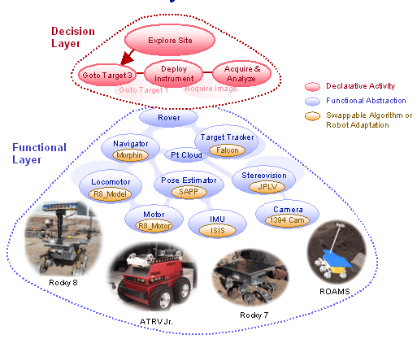
<br /><br />
Other buzzwords from projects unify things in the robotics world:
NDDS, DDS/OpenDDS, ControlShell, LabView, TCX, TCA, RTC, CORBA, CMU-IPC,
Microsoft Robotics Studio, TDL (Task Description Language), yada
yada...
<br /><br />
From Trey: "It is important that young people not understand how
difficult things are."  Basically... just go for it.
</div>
</div>

<div class="posted">
<br />Posted by <span class="item-creator">Kurt</span>
| <a class="link" href="2009-08.html#e2009-08-11T09_07_20.txt">Permalink</a>

<!-- <br /><a href="archives/2009-08-11T10_34_24.html#comments">Comments</a> -->
</div>
</div>
<div class="item">
<a id="e2009-08-10T15_46_31.txt" name="e2009-08-10T15_46_31.txt"></a>
<h2 class="date">08.10.2009 15:46</h2>
<div class="blogbody">
<h3 class="title">Building your own debian dpkg world</h3>
<div class="item-description">
<b>WARNING: Work in progess.  Use at your own risk</b>
<br /><br />
If you want total control over an environment, then you need to have
your own personal package managed area.  I prefer debian to rpm in
general, so Trey and I are looking at building a small debian world on
top of MacOS, Ubuntu, and Windows Cygwin.  The goal is to layer this
over say fink in MacOS and then we can do exactly what we want without
impacting fink.  This should even work on an RPM distribution.  How
to start?  Build dpkg of course.  Since I am a fink contributor, I'll
use that as the starting point.  I will be using exactly the same version
of dpkg (1.10.21) to make sure the patch will work without a hitch.
First, I copied the source from fink.
<pre><b>fink rebuild dpkg</b> # Force fink to download the source
<b>mkdir ~/foo && cd ~/foo</b>
<b>cp /sw/fink/10.4/unstable/main/finkinfo/base/dpkg.patch .</b> # Pull in from fink</pre>
I'm going to try to keep things simple than fink and use gettext from my path (aka from fink).
Therefore, I needed to remove the first two entries in the dpkg.patch that are for get text.
Use your favorite editor here (emacs, right?).
<pre><b>tar xf /sw/src/dpkg_1.10.21.tar.gz</b>
<b>sed 's|@PREFIX@|/Users/schwehr/foo/world|g' &lt; dpkg.patch | patch -p0</b>
<b>mkdir build && cd build</b>
<b>rootdir=/Users/schwehr/foo/world</b>
<b>mkdir $rootdir</b>
<b>../dpkg-1.10.21/configure --prefix=$rootdir  --without-start-stop-daemon --without-sgml-doc \
  --with-admindir=$rootdir/var/lib/dpkg --mandir=$rootdir/share/man \
  --infodir=$rootdir/share/info --srcdir=$rootdir/../dpkg-1.10.21</b>
<b>make  all-include all-optlib all-lib all-dpkg-deb all-split all-scripts all-utils \
  all-main all-dselect all-po all-methods all-man all-doc -j 3</b></pre>
This fails with a ranlib error on the archive.  Eh?
<pre><b>make</b> # Seems to then work?  Will this blow up later?</pre>
At this point, it works and I need to figure out how to make a debian
out of it to bootstrap the system.  Calling <i>make install</i> here
would defeat the purpose of package managing the system.  To play with it,
I went ahead and did the install.  In the future, I should do something like:
<pre><b>make install DEST=somewhere</b></pre>
And then I can build a deb of it and get dpkg to self install the deb of dpkg.
</div>
</div>

<div class="posted">
<br />Posted by <span class="item-creator">Kurt</span>
| <a class="link" href="2009-08.html#e2009-08-10T15_46_31.txt">Permalink</a>

<!-- <br /><a href="archives/2009-08-11T09_07_20.html#comments">Comments</a> -->
</div>
</div>
<div class="item">
<a id="e2009-08-10T10_06_26.txt" name="e2009-08-10T10_06_26.txt"></a>
<h2 class="date">08.10.2009 10:06</h2>
<div class="blogbody">
<h3 class="title">air tanker drop</h3>
<div class="item-description">
Excellent video of air drop of fire retardant from last week.
<br /><br />
<object width="480" height="385"><param name="movie" value="http://www.youtube.com/v/aT3HY8xRwH8&hl=en&fs=1&color1=0x5d1719&color2=0xcd311b"></param><param name="allowFullScreen" value="true"></param><param name="allowscriptaccess" value="always"></param><embed src="http://www.youtube.com/v/aT3HY8xRwH8&hl=en&fs=1&color1=0x5d1719&color2=0xcd311b" type="application/x-shockwave-flash" allowscriptaccess="always" allowfullscreen="true" width="480" height="385"></embed></object>
</div>
</div>

<div class="posted">
<br />Posted by <span class="item-creator">Kurt</span>
| <a class="link" href="2009-08.html#e2009-08-10T10_06_26.txt">Permalink</a>

<!-- <br /><a href="archives/2009-08-10T15_46_31.html#comments">Comments</a> -->
</div>
</div>
<div class="item">
<a id="e2009-08-10T09_06_31.txt" name="e2009-08-10T09_06_31.txt"></a>
<h2 class="date">08.10.2009 09:06</h2>
<div class="blogbody">
<h3 class="title">NOAA Press Release on Arctic mapping</h3>
<div class="item-description">
<a href="http://www.noaanews.noaa.gov/stories2009/20090810_arcticshelf.html"> NOAA Joins Other U.S. Agencies and Canada to Survey the Arctic Continental Shelf</a> [NOAA News]
<br /><br />
<pre>...
Larry Mayer, director of the Center for Coastal and Ocean Mapping and
co-director of the Joint Hydrographic Center, is the chief scientist
for the U.S. mission. NOAA's Andy Armstrong, a physical scientist and
co-director of the Joint Hydrographic Center, is the co-chief
scientist. NOAA and the University of New Hampshire jointly operate
the Joint Hydrographic Center.
<!-- -->
The 41-day joint mission runs from August 7 to September 16 and will
see the U.S. Coast Guard Cutter Healy and the Canadian Coast Guard
Ship Louis S. St-Laurent operating together to obtain a variety of
data.
<!-- -->
"NOAA and the Joint Hydrographic Center will take the lead in
collecting bathymetric data from the Healy to map the seafloor, while
the Canadian icebreaker collects seismic data to determine sediment
thickness," said Craig McLean, deputy assistant administrator for
NOAA's Office of Oceanic and Atmospheric Research. "This
collaboration saves millions of dollars by ensuring data are collected
only once in the same area, and by sharing data useful to both
nations."
...</pre>
<a href="http://www.noaanews.noaa.gov/stories2009/images/arctic3.jpg">Full Resolution</a>
<br /><br />
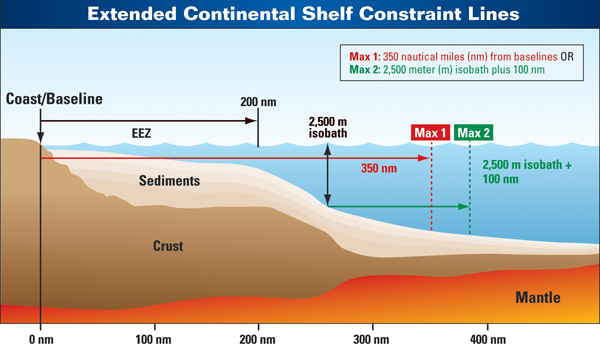
</div>
</div>

<div class="posted">
<br />Posted by <span class="item-creator">Kurt</span>
| <a class="link" href="2009-08.html#e2009-08-10T09_06_31.txt">Permalink</a>

<!-- <br /><a href="archives/2009-08-10T10_06_26.html#comments">Comments</a> -->
</div>
</div>
<div class="item">
<a id="e2009-08-09T14_42_46.txt" name="e2009-08-09T14_42_46.txt"></a>
<h2 class="date">08.09.2009 14:42</h2>
<div class="blogbody">
<h3 class="title">MarNIS on AIS, LRIT, etc</h3>
<div class="item-description">
The <a href="http://www.marnis.org/documents.asp">Maritime navigation Information Services</a> (MarNIS) project has some interesting papers online in their documents section.  e.g. this paper by Tremlett and Klepsvik:
<br /><br />
D2.1: Interim policy recommendations on WP 2.1 Integration of AIS functionalities
<pre>At present the following automatic ship reporting systems are either
adopted or proposed for adoption by IMO and FAO, including:
<!-- -->
-	Global Maritime Distress and Safety System (GMDSS)
-	Automatic Identification System (AIS)
-	Long-range AIS (LR-AIS)
-	Long Range Ship's Identification and Tracking (LRIT)
-	Vessel Monitoring System for fisheries (VMS)
-	Ship security alert system (SSAS)
-	'Daily Report'
<!-- -->
In addition, a number of commercial fleet management services based on
GPS positioning are in operation, for the most part based on
Inmarsat-C position reports.
<!-- -->
While AIS Class A and Class B will meet the need of VTM for detailed
automated ship reporting within the coastal areas and in-land waters
covered by VHF shore stations, no such system has been adopted or
proposed on a global scale.  The recently adopted LRIT system will, in
its present form, only provide identity, position and time information
and basically cover maritime security applications.
<!-- -->
The future take-up of AIS Class B by Non-SOLAS and leisure vessels
remains to be seen.  However, with a price tag of around 500 Euros and
offered as an optional item to VHF radios, it is likely that Class B
transponders will be well accepted by at least the larger leisure
vessels.
<!-- -->
However, there are some questions raised with respect to the
capability of AIS shore stations to handle the non-priority Class B
traffic in some areas with an adequate reporting rate to be of any use
to both the VTM authorities and the mariners. Such deficiencies may be
augmented using other available or proposed terrestrial communication
systems, i.e. WIMAX, DVHF or GSM/UMTS.  Solutions based on WIMAX using
a peer-to-peer methology may also offer ranges beyond VHF and GSM and
possibly serve as a 'gap-filler' between AIS and LRIT.
...</pre>
</div>
</div>

<div class="posted">
<br />Posted by <span class="item-creator">Kurt</span>
| <a class="link" href="2009-08.html#e2009-08-09T14_42_46.txt">Permalink</a>

<!-- <br /><a href="archives/2009-08-10T09_06_31.html#comments">Comments</a> -->
</div>
</div>
<div class="item">
<a id="e2009-08-09T09_51_25.txt" name="e2009-08-09T09_51_25.txt"></a>
<h2 class="date">08.09.2009 09:51</h2>
<div class="blogbody">
<h3 class="title">Healy finds arctic ice</h3>
<div class="item-description">
The Healy has found sea ice...  I see from their track that they are
moving off in a different direction.  Just heard that this year, the
team got out to the Healy via a landing craft rather than the normal
helocopter ride.
<br /><br />
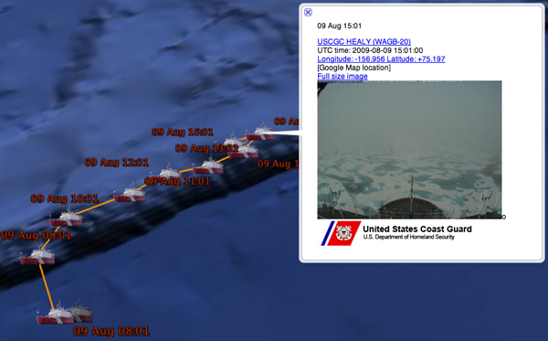
<br /><br />
Feeds are available here:
<br /><br />
<a href="http://vislab-ccom.unh.edu/~schwehr/healy/">http://vislab-ccom.unh.edu/~schwehr/healy/</a>
</div>
</div>

<div class="posted">
<br />Posted by <span class="item-creator">Kurt</span>
| <a class="link" href="2009-08.html#e2009-08-09T09_51_25.txt">Permalink</a>

<!-- <br /><a href="archives/2009-08-09T14_42_46.html#comments">Comments</a> -->
</div>
</div>
<div class="item">
<a id="e2009-08-08T16_50_58.txt" name="e2009-08-08T16_50_58.txt"></a>
<h2 class="date">08.08.2009 16:50</h2>
<div class="blogbody">
<h3 class="title">iPhone note files on the Mac</h3>
<div class="item-description">
I've been attempting to take some notes on the iPhone to see what I think
of the platform.  I synced the iPhone to my mac and tried looking for some
place that might be hiding the notes.  Turns out it is in the Mail app:
<pre>% <b>ls ~/Library/Mail/Mailboxes/Notes.mbox/Messages</b>
29343.emlx  29345.emlx  29347.emlx  29349.emlx  29351.emlx  29353.emlx
29344.emlx  29346.emlx  29348.emlx  29350.emlx  29352.emlx  29416.emlx</pre>
Time to take a look at what is in a note:
<pre><tt>616
-Uniform-Type-Identifier: com.apple.mail-note
Message-Id: &lt;693D209C-19BF-4687-BD99-DAC020E4ECDD@gateway.2wire.net&gt;
From: =?MACINTOSH?Q?Kurt=D5s_iPhone?=
Content-Type: text/html;
	charset=US-ASCII
-Universally-Unique-Identifier: 86207fd8-541f-434f-a374-84a9e6f735d9
Content-Transfer-Encoding: 7bit
-Mail-Generated-Subject: YES
-Mail-Created-Date: 2009-07-19 15:47:26 -0700
Mime-Version: 1.0 (Apple Message framework v935.3)
Subject: =?MACINTOSH?Q?=CAerrands?=
Date: 2009-07-24 15:51:48 -0700
<!-- -->
mongolian beef<b><font color="#0000FF">&lt;div&gt;</font></b>muffins<b><font color="#000080">&amp;nbsp;</font></b><b><font color="#0000FF">&lt;/div&gt;&lt;div&gt;</font></b>waffles<b><font color="#0000FF">&lt;/div&gt;&lt;div&gt;</font></b>milk<b><font color="#0000FF">&lt;/div&gt;&lt;div&gt;&lt;br&gt;&lt;div&gt;&lt;br&gt;&lt;/div&gt;&lt;/div&gt;</font></b>
<b><font color="#000080">&lt;?xml</font></b> <font color="#009900">version</font><font color="#990000">=</font><font color="#FF0000">"1.0"</font> <font color="#009900">encoding</font><font color="#990000">=</font><font color="#FF0000">"UTF-8"</font><b><font color="#000080">?&gt;</font></b>
<b><font color="#000080">&lt;!DOCTYPE</font></b> <font color="#009900">plist</font> <font color="#009900">PUBLIC</font> <font color="#FF0000">"-//Apple//DTD PLIST 1.0//EN"</font> <font color="#FF0000">"http://www.apple.com/DTDs/PropertyList-1.0.dtd"</font><b><font color="#000080">&gt;</font></b>
<b><font color="#0000FF">&lt;plist</font></b> <font color="#009900">version</font><font color="#990000">=</font><font color="#FF0000">"1.0"</font><b><font color="#0000FF">&gt;</font></b>
<b><font color="#0000FF">&lt;dict&gt;</font></b>
	<b><font color="#0000FF">&lt;key&gt;</font></b>date-sent<b><font color="#0000FF">&lt;/key&gt;</font></b>
	<b><font color="#0000FF">&lt;real&gt;</font></b>1248475908<b><font color="#0000FF">&lt;/real&gt;</font></b>
	<b><font color="#0000FF">&lt;key&gt;</font></b>flags<b><font color="#0000FF">&lt;/key&gt;</font></b>
	<b><font color="#0000FF">&lt;integer&gt;</font></b>33751169<b><font color="#0000FF">&lt;/integer&gt;</font></b>
	<b><font color="#0000FF">&lt;key&gt;</font></b>sender<b><font color="#0000FF">&lt;/key&gt;</font></b>
	<b><font color="#0000FF">&lt;string&gt;</font></b>Kurt's iPhone<b><font color="#0000FF">&lt;/string&gt;</font></b>
	<b><font color="#0000FF">&lt;key&gt;</font></b>subject<b><font color="#0000FF">&lt;/key&gt;</font></b>
	<b><font color="#0000FF">&lt;string&gt;</font></b>errands<b><font color="#0000FF">&lt;/string&gt;</font></b>
	<b><font color="#0000FF">&lt;key&gt;</font></b>to<b><font color="#0000FF">&lt;/key&gt;</font></b>
	<b><font color="#0000FF">&lt;string&gt;&lt;/string&gt;</font></b>
<b><font color="#0000FF">&lt;/dict&gt;</font></b>
<b><font color="#0000FF">&lt;/plist&gt;</font></b></tt></pre>
This is almost an RFC822 message.  I just need to remove that first line that is the message size(right?).
<pre><tt><i><font color="#9A1900">#!/usr/bin/env python</font></i>
<!-- -->
<b><font color="#000080">import</font></b> email
<b><font color="#000080">import</font></b> sys
<!-- -->
em_file <font color="#990000">=</font> <b><font color="#000000">file</font></b><font color="#990000">(</font>sys<font color="#990000">.</font>argv<font color="#990000">[</font><font color="#993399">1</font><font color="#990000">])</font>
em_file<font color="#990000">.</font><b><font color="#000000">readline</font></b><font color="#990000">()</font>
em <font color="#990000">=</font> email<font color="#990000">.</font><b><font color="#000000">message_from_file</font></b><font color="#990000">(</font>em_file<font color="#990000">)</font>
<!-- -->
content <font color="#990000">=</font> <font color="#990000">[]</font>
<b><font color="#0000FF">for</font></b> line <b><font color="#0000FF">in</font></b> em<font color="#990000">.</font><b><font color="#000000">get_payload</font></b><font color="#990000">().</font><b><font color="#000000">splitlines</font></b><font color="#990000">():</font>
    <b><font color="#0000FF">if</font></b> <font color="#FF0000">'&lt;?xml version="1.0" encoding="UTF-8"?&gt;'</font> <font color="#990000">==</font> line<font color="#990000">.</font><b><font color="#000000">strip</font></b><font color="#990000">():</font>
        <b><font color="#0000FF">break</font></b>
    content<font color="#990000">.</font><b><font color="#000000">append</font></b><font color="#990000">(</font>line<font color="#990000">)</font>
<!-- -->
results <font color="#990000">=</font> <font color="#FF0000">''</font><font color="#990000">.</font><b><font color="#000000">join</font></b><font color="#990000">(</font>content<font color="#990000">)</font>
<b><font color="#0000FF">print</font></b> results</tt></pre>
After doing <i>fink install html2text</i>, I can parse my message:
<pre>% <b>./notes.py 29344.emlx | html2text</b>
mongolian beef
muffins 
waffles
milk</pre>
All this because I use Thunderbird and don't want to open mail or to email
notes to myself.
</div>
</div>

<div class="posted">
<br />Posted by <span class="item-creator">Kurt</span>
| <a class="link" href="2009-08.html#e2009-08-08T16_50_58.txt">Permalink</a>

<!-- <br /><a href="archives/2009-08-09T09_51_25.html#comments">Comments</a> -->
</div>
</div>
<div class="item">
<a id="e2009-08-08T09_31_53.txt" name="e2009-08-08T09_31_53.txt"></a>
<h2 class="date">08.08.2009 09:31</h2>
<div class="blogbody">
<h3 class="title">CCOM/JHC team on the Healy and heading North</h3>
<div class="item-description">
Last week, the CCOM/JHC science team for the Healy packed up and
traveled up to Barrow Alaska.  They are now on the Healy and steaming
north for more sea floor mapping.
<br /><br />
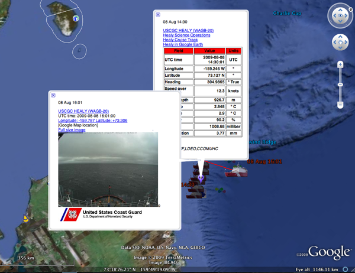
<br /><br />
Also, there is a new US government website about the project: <a href="http://continentalshelf.gov/">http://continentalshelf.gov/</a>
<br /><br />
<pre>Welcome to the Website for the U.S. Extended Continental Shelf
Project! The 2009 U.S.-Canada Arctic Continental Shelf Survey runs
from August 7 through September 16.</pre>
</div>
</div>

<div class="posted">
<br />Posted by <span class="item-creator">Kurt</span>
| <a class="link" href="2009-08.html#e2009-08-08T09_31_53.txt">Permalink</a>

<!-- <br /><a href="archives/2009-08-08T16_50_58.html#comments">Comments</a> -->
</div>
</div>
<div class="item">
<a id="e2009-08-08T09_07_38.txt" name="e2009-08-08T09_07_38.txt"></a>
<h2 class="date">08.08.2009 09:07</h2>
<div class="blogbody">
<h3 class="title">Cal Fire Sonoma</h3>
<div class="item-description">
Yesterday, I visited <a href="http://www.fire.ca.gov/">Cal Fire</a> Sonoma air attack station and the Cal
Fire Napa command station with Trey and Alex R.  Both teams were
supper hosts!
<br /><br />

<br /><br />
You can listen in to CalFire's radio traffic on <a href="http://www.scancal.org/">ScanCal</a>
</div>
</div>

<div class="posted">
<br />Posted by <span class="item-creator">Kurt</span>
| <a class="link" href="2009-08.html#e2009-08-08T09_07_38.txt">Permalink</a>

<!-- <br /><a href="archives/2009-08-08T09_31_53.html#comments">Comments</a> -->
</div>
</div>
<div class="item">
<a id="e2009-08-08T09_04_54.txt" name="e2009-08-08T09_04_54.txt"></a>
<h2 class="date">08.08.2009 09:04</h2>
<div class="blogbody">
<h3 class="title">WHOI Silent buoy mooring lines</h3>
<div class="item-description">
Since I work on <a href="http://listenforwhales.org/">ListenForWhales.org</a> that uses these buoys:
<br /><br />
<a href="http://www.whoi.edu/page.do?pid=10897&i=7981&x=217">WHOI Image of the Day - Silent buoy</a>
<br /><br />
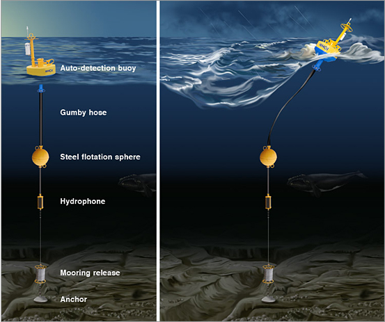
</div>
</div>

<div class="posted">
<br />Posted by <span class="item-creator">Kurt</span>
| <a class="link" href="2009-08.html#e2009-08-08T09_04_54.txt">Permalink</a>

<!-- <br /><a href="archives/2009-08-08T09_07_38.html#comments">Comments</a> -->
</div>
</div>
<div class="item">
<a id="e2009-08-08T09_00_23.txt" name="e2009-08-08T09_00_23.txt"></a>
<h2 class="date">08.08.2009 09:00</h2>
<div class="blogbody">
<h3 class="title">Controlling an aircraft with an iPhone / iPod Touch</h3>
<div class="item-description">
I mentioned the idea of controlling an AUV via an iPhone before.
<br /><br />
<a href="http://www.wired.com/dangerroom/2009/08/new-use-for-your-iphone-controlling-drones/">New Use for Your iPhone: Controlling Drones</a> [Wired]
<br /><br />
<object width="640" height="385"><param name="movie" value="http://www.youtube.com/v/YlbEbQ6TJMc&hl=en&fs=1&color1=0x3a3a3a&color2=0x999999"></param><param name="allowFullScreen" value="true"></param><param name="allowscriptaccess" value="always"></param><embed src="http://www.youtube.com/v/YlbEbQ6TJMc&hl=en&fs=1&color1=0x3a3a3a&color2=0x999999" type="application/x-shockwave-flash" allowscriptaccess="always" allowfullscreen="true" width="640" height="385"></embed></object>
</div>
</div>

<div class="posted">
<br />Posted by <span class="item-creator">Kurt</span>
| <a class="link" href="2009-08.html#e2009-08-08T09_00_23.txt">Permalink</a>

<!-- <br /><a href="archives/2009-08-08T09_04_54.html#comments">Comments</a> -->
</div>
</div>
<div class="item">
<a id="e2009-08-06T10_27_14.txt" name="e2009-08-06T10_27_14.txt"></a>
<h2 class="date">08.06.2009 10:27</h2>
<div class="blogbody">
<h3 class="title">GeoWeb standards</h3>
<div class="item-description">
<a href="http://highearthorbit.com/geoweb-standards-where-we-are/">GeoWeb Standards - Where we are</a> [HighEarthOrbit]
<br /><br />
Andrew explains the basics of a range of formats that include
ShapeFiles, Microformat-Geo & Adr, GeoRSS, KML, GeoJSON, GML, ...
<br /><br />
I appreciated his discussion of GeoRSS.  I hadn't looked at RDF and
was seeing it being used as a serialization format.  Now I know.
<pre>Despite it's widespread adoption, GeoRSS has some complexities that
arose out of it's development. There are 9 potential 'flavors' of
GeoRSS, although this is largely due to the 3 different formats of
feeds: RDF, RSS, and Atom. There are still 3 formats of GeoRSS itself
that can be utilized in any of the 3 feed formats: W3C, Simple, and
GML. This causes confusion for developers, especially since W3C format
is deprecated but still widely used. Perhaps this is one reason that
despite GeoRSS being a simple extension to existing feed formats,
there still is not GeoRSS support in any of the major news feed
readers, except perhaps limited support in FriendFeed.
<!-- -->
In addition, GeoRSS hasn't really advanced in quite awhile despite
multiple requests and discussions of extensions for multiple
locations, time spans, external geometries, and feature
identification.</pre>
If this stuff interests you, also take a look at what Sean Gillies has to say:
<br /><br />
<a href="http://sgillies.net/blog/923/its-the-imagery-stupid">It's the imagery, stupid</a> of why we are using KML more than GML.  And <a href="http://sgillies.net/blog/918/geographic-syndication-in-a-nutshell">Geographic syndication in a nutshell</a>
</div>
</div>

<div class="posted">
<br />Posted by <span class="item-creator">Kurt</span>
| <a class="link" href="2009-08.html#e2009-08-06T10_27_14.txt">Permalink</a>

<!-- <br /><a href="archives/2009-08-08T09_00_23.html#comments">Comments</a> -->
</div>
</div>
<div class="item">
<a id="e2009-08-06T08_19_07.txt" name="e2009-08-06T08_19_07.txt"></a>
<h2 class="date">08.06.2009 08:19</h2>
<div class="blogbody">
<h3 class="title">Niagra Falls from an airplane with an iPhone</h3>
<div class="item-description">
The iPhone camera is okay, but this shows that even a super cheap
point and shoot with a real lense would have done better.  Yesterday,
I got my first sight of Niagra Falls.  We were at 36000 feet.
<br /><br />

</div>
</div>

<div class="posted">
<br />Posted by <span class="item-creator">Kurt</span>
| <a class="link" href="2009-08.html#e2009-08-06T08_19_07.txt">Permalink</a>

<!-- <br /><a href="archives/2009-08-06T10_27_14.html#comments">Comments</a> -->
</div>
</div>
<div class="item">
<a id="e2009-08-06T08_08_29.txt" name="e2009-08-06T08_08_29.txt"></a>
<h2 class="date">08.06.2009 08:08</h2>
<div class="blogbody">
<h3 class="title">New England maritime stuff</h3>
<div class="item-description">
The <a href="http://www.fosters.com/apps/pbcs.dll/article?AID=/20090806/GJNEWS_01/708069758/">tall ships are coming into Portsmouth, NH this weekend</a>.  It will be crowded, but worth it to see them.  Too bad I will be missing them.
<br /><br />
One of the ships had some issues on the way:  <a href="http://coastguardnews.com/tall-ship-unicorn-freed-from-rocks-in-great-harbor/2009/08/05/">Tall ship Unicorn freed from rocks in Great Harbor</a>
<br /><br />
Local dredging is delayed in Dover: <a href="http://www.fosters.com/apps/pbcs.dll/article?AID=/20090806/GJNEWS_01/708069714/">Cocheco River dredging delayed; to resume in fall 2010</a>
<br /><br />
Lobster fishermen can be intense folk: <a href="http://www.seacoastonline.com/articles/20090806-NEWS-908060405">Lobster boats sunk after harbor shooting</a>
<pre>Three lobster boats were sabotaged and two of them sunk in a
midcoast harbor amid growing tensions among lobstermen two weeks after
another lobster turf war escalated into a shooting on Matinicus
Island, law enforcement officials said Wednesday.
...</pre>
</div>
</div>

<div class="posted">
<br />Posted by <span class="item-creator">Kurt</span>
| <a class="link" href="2009-08.html#e2009-08-06T08_08_29.txt">Permalink</a>

<!-- <br /><a href="archives/2009-08-06T08_19_07.html#comments">Comments</a> -->
</div>
</div>
<div class="item">
<a id="e2009-08-05T21_37_45.txt" name="e2009-08-05T21_37_45.txt"></a>
<h2 class="date">08.05.2009 21:37</h2>
<div class="blogbody">
<h3 class="title">Best practices for AIS message creation?</h3>
<div class="item-description">
I'm reviewing some AIS binary messages and was noticing that one field
in a message used the next value in the series to denote unknown,
where another field in the same message used the highest value possible
for the field to denote unknown.  I decided to look at ITU.1371-3 at the
position messages and found exactly the same thing.  We desperately need
a best practices document that details the style to follow.  I know
I read something that started to get into this, but can't find it in my
stash of technical specs and it's not in:
<br /><br />
<a href="http://www.navcen.uscg.gov/enav/ais/AIS_standards.htm">USCG AIS Standards</a>
<br /><br />
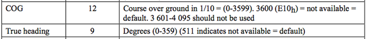
</div>
</div>

<div class="posted">
<br />Posted by <span class="item-creator">Kurt</span>
| <a class="link" href="2009-08.html#e2009-08-05T21_37_45.txt">Permalink</a>

<!-- <br /><a href="archives/2009-08-06T08_08_29.html#comments">Comments</a> -->
</div>
</div>
<div class="item">
<a id="e2009-08-05T21_25_15.txt" name="e2009-08-05T21_25_15.txt"></a>
<h2 class="date">08.05.2009 21:25</h2>
<div class="blogbody">
<h3 class="title">ROV  Code of Practice - What about AUV's?</h3>
<div class="item-description">
I remember making checklists for the NASA Ames Telepresence ROV (TROV) back in
1992.  We always seemed to be learning things the hard way.
<br /><br />
<a href="http://www.hydro-international.com/news/id3345-ROV_Code_Of_Practice_Updated.html">ROV Code Of Practice Updated</a>
<pre>Designed for use by clients and contractors alike, the International
Marine Contractors Association (IMCA) 'Code of Practice for the Safe
and Efficient Operation of Remotely Operated Vehicles (ROVs)' has been
reviewed and updated to reflect technological and operational
developments, and includes additional guidance provided in particular
on safe crewing levels for ROVs equipped with the growing range of
tools packages in use within this fast-developing industry.
...</pre>
So where is code of practice for AUV's?  I can think of some key things
to include... starting with always make sure you have all the islands in
the area digitized and in the planning tool before making any mission plans.
(At least the vehicle called home on the iridium to tell the team where it 
was stuck...)
</div>
</div>

<div class="posted">
<br />Posted by <span class="item-creator">Kurt</span>
| <a class="link" href="2009-08.html#e2009-08-05T21_25_15.txt">Permalink</a>

<!-- <br /><a href="archives/2009-08-05T21_37_45.html#comments">Comments</a> -->
</div>
</div>
<div class="item">
<a id="e2009-08-04T17_01_15.txt" name="e2009-08-04T17_01_15.txt"></a>
<h2 class="date">08.04.2009 17:01</h2>
<div class="blogbody">
<h3 class="title">Adventures in Oceanography - Dale Stokes</h3>
<div class="item-description">
Via the Art T. news network... a presentation at the Scripps Aquarium.
Building scientific instruments and lots of other stuff.
<br /><br />
<object width="480" height="385"><param name="movie" value="http://www.youtube.com/v/3ENtNt-kb3o&hl=en&fs=1&color1=0x006699&color2=0x54abd6"></param><param name="allowFullScreen" value="true"></param><param name="allowscriptaccess" value="always"></param><embed src="http://www.youtube.com/v/3ENtNt-kb3o&hl=en&fs=1&color1=0x006699&color2=0x54abd6" type="application/x-shockwave-flash" allowscriptaccess="always" allowfullscreen="true" width="480" height="385"></embed></object>
</div>
</div>

<div class="posted">
<br />Posted by <span class="item-creator">Kurt</span>
| <a class="link" href="2009-08.html#e2009-08-04T17_01_15.txt">Permalink</a>

<!-- <br /><a href="archives/2009-08-05T21_25_15.html#comments">Comments</a> -->
</div>
</div>
<div class="item">
<a id="e2009-08-04T16_54_27.txt" name="e2009-08-04T16_54_27.txt"></a>
<h2 class="date">08.04.2009 16:54</h2>
<div class="blogbody">
<h3 class="title">NOAA move on the west coast</h3>
<div class="item-description">
<a href="http://www.noaanews.noaa.gov/stories2009/20090804_newport.html">NOAA Selects Newport, Ore., as New Home of Marine Operations Center-Pacific</a>
<br /><br />
This is going to be a big shift of a lot of people I know.
<br /><br />
<pre>...
The NOAA Marine Operations Center-Pacific is comprised of
approximately 175 employees, including more than 110 officers and crew
assigned to the NOAA ships McArthur II, Miller Freeman, Rainier and
Bell M. Shimada, a new fisheries survey vessels expected to join the
NOAA fleet in 2010.
...</pre>
</div>
</div>

<div class="posted">
<br />Posted by <span class="item-creator">Kurt</span>
| <a class="link" href="2009-08.html#e2009-08-04T16_54_27.txt">Permalink</a>

<!-- <br /><a href="archives/2009-08-04T17_01_15.html#comments">Comments</a> -->
</div>
</div>
<div class="item">
<a id="e2009-08-04T14_36_59.txt" name="e2009-08-04T14_36_59.txt"></a>
<h2 class="date">08.04.2009 14:36</h2>
<div class="blogbody">
<h3 class="title">Fairpoint DSL troubleshooting</h3>
<div class="item-description">
It's painful to be on the phone with technicians that can only use a
playbook and can't think through a problem.  My DSL line with
Fairpoint has been getting flaky over the last few weeks.  In the
past, when I had trouble, they looked at the signal level and had to
adjust the speed down for a while to get a reliable connection.
Things got better for a while, but now is was unusable.  I called the
tech and I asked if he could check the logs to look at all the drops.
He said he can't look at any technical details.  He could only see if
I was connected or not.  He then proceeded to push me through reseting
the modem and re-entering the user and password for fairpoint.  How
does intermittent connection equal wrong username and password?  He
never once had me look at the Westel's troubleshooting tools.  I think
it's the westel, so I went and got a Netgear DGN2000 with builting
wifi and DSL.  That seems to be doing well and does an okay job of
showing me what is up with the connection.  I think I will stick with
the netgear device.
<br /><br />
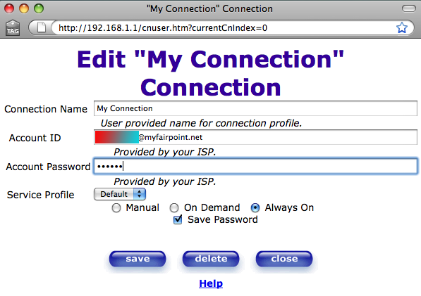
<br /><br />
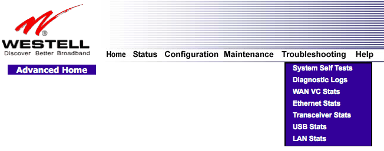
<br /><br />
What should these numbers be?
<br /><br />
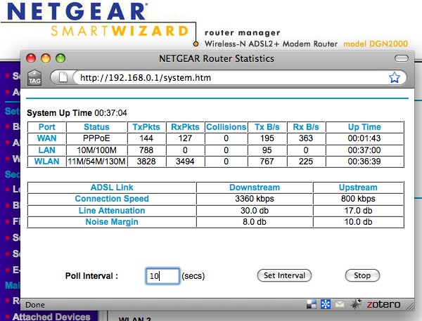
</div>
</div>

<div class="posted">
<br />Posted by <span class="item-creator">Kurt</span>
| <a class="link" href="2009-08.html#e2009-08-04T14_36_59.txt">Permalink</a>

<!-- <br /><a href="archives/2009-08-04T16_54_27.html#comments">Comments</a> -->
</div>
</div>
<div class="item">
<a id="e2009-08-02T15_41_31.txt" name="e2009-08-02T15_41_31.txt"></a>
<h2 class="date">08.02.2009 15:41</h2>
<div class="blogbody">
<h3 class="title">ringtone scams</h3>
<div class="item-description">
Dear Congress,
<br /><br />
This just shouldn't be allowed.  I've purchased music on CD and ripped
it into iTunes.  I thought I would just quick make a ring tone.  But
no!  It says I can only make ring tones from music that is purchased
from the iTunes store.  Since I didn't want to repurchase a song that
I already bought, I went and got my first song from the iTunes store.
I made sure it had the bell next to it for a ring tone.  Once I had
the song in my iTunes library, I asked iTunes to make a ring tone and
it asked me to pay another $1.  What?  I've already payed for the
song.  Forget that.  I have sound files that I've recorded myself.  I
own the copyright.  This means that I can't make ring tones of audio
that I have the total rights to.  Ridiculous!  I refuse to keep paying
for this kind of thing.  I own hundreds of CDs.  I like supporting
artists and I'll buy the CD and go to concerts, but not this.
<br /><br />
Now, there is a work around.  Garage Band will allow you to import
audio files if they aren't DRMed and it exports ring tones.  So if you
have ripped a CD, go this route.  You can put in up to 40 seconds of
music into the ringtone.... <a href="http://the-moni-blog.blogspot.com/2009/08/importing-music-into-garageband-and.html">Importing Music into GarageBand and Making Ringtones</a> [Moni-blog]
<br /><br />
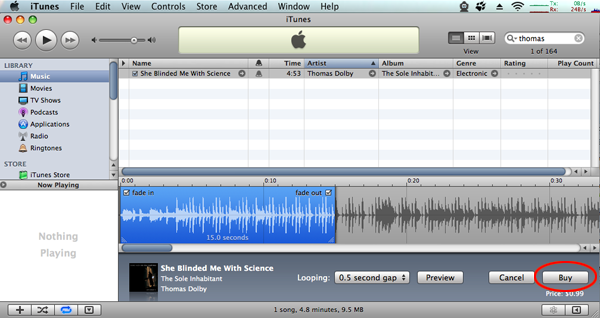
<br /><br />
I support the concept of copyrights for works, but not this kind of
thing and what amazing things would happen if copyrights expired
after 25 or 30 years!
</div>
</div>

<div class="posted">
<br />Posted by <span class="item-creator">Kurt</span>
| <a class="link" href="2009-08.html#e2009-08-02T15_41_31.txt">Permalink</a>

<!-- <br /><a href="archives/2009-08-04T14_36_59.html#comments">Comments</a> -->
</div>
</div>
<div class="item">
<a id="e2009-08-02T00_21_31.txt" name="e2009-08-02T00_21_31.txt"></a>
<h2 class="date">08.02.2009 00:21</h2>
<div class="blogbody">
<h3 class="title">NMEA / AIS highlighting using python pygments</h3>
<div class="item-description">
I've taken the first stab at a Lexer for pygments to
colorize/highlight general NMEA statements and more specifically USCG
old style AIS with receive metadata.  It's by no means perfect, but 
it does get things going.  Pygments uses regular expressions to allow
parsing of languages and formats, so let me start with my current python
re definition for the USCG N-AIS format:
<pre><tt>uscg_ais_nmea_regex_str <font color="#990000">=</font> r<font color="#FF0000">"""[!$](?P&lt;talker&gt;AI)(?P&lt;stringType&gt;VD[MO])</font>
<font color="#FF0000">,(?P&lt;total&gt;\d?)</font>
<font color="#FF0000">,(?P&lt;senNum&gt;\d?)</font>
<font color="#FF0000">,(?P&lt;seqId&gt;[0-9]?)</font>
<font color="#FF0000">,(?P&lt;chan&gt;[AB])</font>
<font color="#FF0000">,(?P&lt;body&gt;[;:=@a-zA-Z0-9&lt;&gt;\?\'\`]*)</font>
<font color="#FF0000">,(?P&lt;fillBits&gt;\d)\*(?P&lt;checksum&gt;[0-9A-F][0-9A-F])</font>
<font color="#FF0000">(  </font>
<font color="#FF0000">  (,S(?P&lt;slot&gt;\d*))</font>
<font color="#FF0000">  | (,s(?P&lt;s_rssi&gt;\d*))</font>
<font color="#FF0000">  | (,d(?P&lt;signal_strength&gt;[-0-9]*))</font>
<font color="#FF0000">  | (,t(?P&lt;t_unknown&gt;[^,]*))</font>
<font color="#FF0000">  | (,T(?P&lt;time_of_arrival&gt;[0-9.]*))</font>
<font color="#FF0000">  | (,x(?P&lt;x_station_counter&gt;[0-9]*))</font>
<font color="#FF0000">  | (,(?P&lt;station&gt;(?P&lt;station_type&gt;[rbB])[a-zA-Z0-9]*))</font>
<font color="#FF0000">)*</font>
<font color="#FF0000">,(?P&lt;timeStamp&gt;\d+([.]\d+)?)?</font>
<font color="#FF0000">"""</font></tt></pre>
A traditional NMEA string stops at the checksum, so I should be able to handle
sentences (one line of text) that either come with or withou the metadata.
I created a file called: pygments/lexers/nmea.py
<pre><tt><b><font color="#000080">import</font></b> re
<b><font color="#0000FF">try</font></b><font color="#990000">:</font>
    set
<b><font color="#0000FF">except</font></b> NameError<font color="#990000">:</font>
    <b><font color="#000080">from</font></b> sets <b><font color="#000080">import</font></b> Set as set
<!-- -->
<b><font color="#000080">from</font></b> pygments<font color="#990000">.</font>lexer <b><font color="#000080">import</font></b> RegexLexer
<b><font color="#000080">from</font></b> pygments<font color="#990000">.</font>token <b><font color="#000080">import</font></b> Text<font color="#990000">,</font> Name<font color="#990000">,</font> String<font color="#990000">,</font> Literal
<!-- -->
__all__ <font color="#990000">=</font> <font color="#990000">[</font><font color="#FF0000">'NmeaLexer'</font><font color="#990000">]</font>
<!-- -->
<b><font color="#0000FF">class</font></b> <b><font color="#000000">NmeaLexer</font></b><font color="#990000">(</font>RegexLexer<font color="#990000">):</font>
<i><font color="#9A1900">    '''Data streams from GPS, AIS, and other sensors.</font></i>
<i><font color="#9A1900">    Does not support the NMEA 4.0 TAG Block extensions</font></i>
<i><font color="#9A1900">    '''</font></i>
<!-- -->
    name <font color="#990000">=</font> <font color="#FF0000">'Nmea'</font>
    aliases <font color="#990000">=</font> <font color="#990000">[</font><font color="#FF0000">'nmea'</font><font color="#990000">,</font> <font color="#FF0000">'NMEA'</font><font color="#990000">,</font> <font color="#FF0000">'GPS'</font><font color="#990000">,</font> <font color="#FF0000">'AIS'</font><font color="#990000">,</font> <font color="#FF0000">'ais'</font><font color="#990000">]</font>
    filenames <font color="#990000">=</font> <font color="#990000">[</font><font color="#FF0000">'*.ais'</font><font color="#990000">,]</font> <i><font color="#9A1900"># And?</font></i>
<!-- -->
    flags <font color="#990000">=</font> re<font color="#990000">.</font>VERBOSE
<!-- -->
    tokens <font color="#990000">=</font> <font color="#990000">{</font>
        <font color="#FF0000">'root'</font><font color="#990000">:</font> <font color="#990000">[</font>
            
            <font color="#990000">(</font>r<font color="#FF0000">'[!$][^,]*'</font><font color="#990000">,</font> String<font color="#990000">),</font> <i><font color="#9A1900">#,'fields'), # Talker and message type</font></i>
            <font color="#990000">(</font>r<font color="#FF0000">',[^,*\n]*'</font><font color="#990000">,</font> Text<font color="#990000">),</font> <i><font color="#9A1900"># Field</font></i>
            <i><font color="#9A1900">#(r',</font></i>
            <font color="#990000">(</font>r<font color="#FF0000">'[*][0-9A-F][0-9A-F]'</font><font color="#990000">,</font> Name<font color="#990000">,</font> <font color="#FF0000">'uscg-metadata'</font><font color="#990000">),</font> <i><font color="#9A1900"># Checksum and move into USCG metadata</font></i>
            <font color="#990000">],</font>
        <font color="#FF0000">'uscg-metadata'</font><font color="#990000">:</font> <font color="#990000">[</font>
            <font color="#990000">(</font>r<font color="#FF0000">',[^drstTx0-9][^,]*'</font><font color="#990000">,</font>Name<font color="#990000">.</font>Entity<font color="#990000">),</font> <i><font color="#9A1900"># Unknown things</font></i>
            <font color="#990000">(</font>r<font color="#FF0000">',d[^,]*'</font><font color="#990000">,</font>Name<font color="#990000">.</font>Builtin<font color="#990000">),</font> <i><font color="#9A1900"># signal strength</font></i>
            <font color="#990000">(</font>r<font color="#FF0000">',r[^,]*'</font><font color="#990000">,</font>Name<font color="#990000">.</font>Attribute<font color="#990000">),</font> <i><font color="#9A1900"># Station id/name</font></i>
            <font color="#990000">(</font>r<font color="#FF0000">',s[^,]*'</font><font color="#990000">,</font>Name<font color="#990000">.</font>Class<font color="#990000">),</font> <i><font color="#9A1900"># RSSI</font></i>
            <font color="#990000">(</font>r<font color="#FF0000">',t[^,]*'</font><font color="#990000">,</font>Name<font color="#990000">.</font>Constant<font color="#990000">),</font> <i><font color="#9A1900"># unknown </font></i>
            <font color="#990000">(</font>r<font color="#FF0000">',T[^,]*'</font><font color="#990000">,</font>Name<font color="#990000">.</font>Decorator<font color="#990000">),</font> <i><font color="#9A1900"># time of arrival</font></i>
            <font color="#990000">(</font>r<font color="#FF0000">',x[^,]*'</font><font color="#990000">,</font>Name<font color="#990000">.</font>Function<font color="#990000">),</font> <i><font color="#9A1900"># station counter</font></i>
            <font color="#990000">(</font>r<font color="#FF0000">',[0-9]*'</font><font color="#990000">,</font>Name<font color="#990000">.</font>Constant<font color="#990000">,</font><font color="#FF0000">'#pop'</font><font color="#990000">),</font>
            <font color="#990000">(</font>r<font color="#FF0000">'$'</font><font color="#990000">,</font>Name<font color="#990000">.</font>Tag<font color="#990000">,</font><font color="#FF0000">'#pop'</font><font color="#990000">),</font> <i><font color="#9A1900"># Make sure we pop.  Doesn't see to help</font></i>
            <font color="#990000">]</font>
        <font color="#990000">}</font></tt></pre>
Since NMEA is line oriented, I had to add a <b>flags</b> member to the class
to turn off the default re.M (multiline) behavior.  Then, to enable the lexer,
I edited _mapping.py and added this line to the LEXERS dictionary:
<pre>    'NmeaLexer': ('pygments.lexers.nmea', 'Nmea', ('nmea',), ('*.ais',), ()),</pre>
Now it is ready to try:
<br /><br />
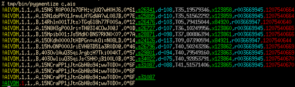
<br /><br />
You can see that this test file with partial metadata on the 2nd to last line
causes something to go wrong with the last line.  Hopefully, the community 
can improve upon this start.
<br /><br />
And yes, I used kodos to help me debug my typos in the regex's.
</div>
</div>

<div class="posted">
<br />Posted by <span class="item-creator">Kurt</span>
| <a class="link" href="2009-08.html#e2009-08-02T00_21_31.txt">Permalink</a>

<!-- <br /><a href="archives/2009-08-02T15_41_31.html#comments">Comments</a> -->
</div>
</div>
<div class="item">
<a id="e2009-08-01T21_25_20.txt" name="e2009-08-01T21_25_20.txt"></a>
<h2 class="date">08.01.2009 21:25</h2>
<div class="blogbody">
<h3 class="title">MarineBuzz on Boston right whale listening network</h3>
<div class="item-description">
<a href="http://www.marinebuzz.com/2009/08/01/intelligent-buoys-to-avoid-whale-ship-collisions/">Intelligent Buoys to Avoid Whale Ship Collisions</a> [MarineBuzz]
<br /><br />
The article links to a WHOI page that I hadn't seen before (I don't deal much with the acoustics):
<br /><br />
<a
href="http://www.whoi.edu/oceanus/viewArticle.do?archives=true&id=57146">Buoys
Help Avert Whale-Ship Collisions Specially engineered mooring system
detects whales and warns ships</a>
<br /><br />
See also: <a href="http://gcaptain.com/maritime/blog/maritime-monday-173/">Maritime Monday 173</a> [gCaptain.com]
</div>
</div>

<div class="posted">
<br />Posted by <span class="item-creator">Kurt</span>
| <a class="link" href="2009-08.html#e2009-08-01T21_25_20.txt">Permalink</a>

<!-- <br /><a href="archives/2009-08-02T00_21_31.html#comments">Comments</a> -->
</div>
</div>
<div class="item">
<a id="e2009-08-01T20_37_34.txt" name="e2009-08-01T20_37_34.txt"></a>
<h2 class="date">08.01.2009 20:37</h2>
<div class="blogbody">
<h3 class="title">message decimation reveals strange AIS transceiver behavior</h3>
<div class="item-description">
I should know enough by now to not be surprised by things like this,
but I am.  I was running checks on my decimation algorithm.  Using
just one receiver and only position messages, I should see very few
removed messages (or none).  I got way more than I expected: 108
messages (0.12%).  While looking at the messages, I saw very
unexpected behavior.  Most of these messages are from one vessel and
are retransmissions of the same position message on the same AIS
channel, but 0.03 to 0.19 seconds apart.
<pre>% <b>grep ',120756572' 20080407.log.norm | grep 8LvSh5000Jr</b>
!AIVDM,1,1,,B,38LvSh5000JrdUrH@D&lt;sk8jt0PUA,0*6B,s24733,d-110,T42.44911276,x16510,r003669947,1207565720
!AIVDM,1,1,,B,38LvSh5000JrdUtH@D&lt;ck8jv0PSQ,0*69,s24730,d-110,T42.47580536,x16511,r003669947,1207565720
!AIVDM,1,1,,A,38LvSh5000JrdUrH@D&lt;sk8k00PVi,0*06,s23257,d-117,T44.31575392,x16513,r003669947,1207565722
!AIVDM,1,1,,A,38LvSh5000JrdUrH@D&lt;sk8k20PU1,0*5F,s23271,d-117,T44.47572724,x16514,r003669947,1207565722
!AIVDM,1,1,,B,38LvSh5000JrdUrH@D&lt;sk8k40PVi,0*01,s24719,d-110,T46.10240842,x16515,r003669947,1207565724
!AIVDM,1,1,,B,38LvSh5000JrdUrH@D&lt;sk8k40PUA,0*2A,s24698,d-111,T46.42240714,x16516,r003669947,1207565724
!AIVDM,1,1,,B,38LvSh5000JrdUpH@D=;k8k60PTQ,0*72,s24611,d-111,T46.52908640,x16517,r003669947,1207565724
!AIVDM,1,1,,B,38LvSh5000JrdUpH@D=;k8k60PTQ,0*72,s24609,d-111,T46.60907306,x16518,r003669947,1207565725
!AIVDM,1,1,,B,18LvSh5000JrdUnH@D=;k8k&lt;0d0B,0*27,s24396,d-112,T50.23571518,x16522,r003669947,1207565728
!AIVDM,1,1,,B,18LvSh5000JrdUnH@D=;k8k&lt;0d0B,0*27,s24326,d-112,T50.42236808,x16523,r003669947,1207565728</pre>
I checked another receiver and it sees the same results, so it's not a receiver having hardware issues.
<br /><br />
Just from looking at the encoded text, I can see that it is the same
vessel (the MMSI is not changing) putting out both ITDMA (msg 3) and
SOTDMA (msg 1).  e.g.
<pre>% <b>ais_msg_1.py -d '!AIVDM,1,1,,B,18LvSh5000JrdUnH@D=;k8k<0d0B,0*27,s24326,d-112,T50.42236808,x16523,r003669947,1207565728'</b>
position:
        MessageID:          1
        RepeatIndicator:    0
        UserID:             567256000
        NavigationStatus:   5
        ROT:                0
        SOG:                0
        PositionAccuracy:   0
        longitude:          -71.06358167
        latitude:           42.388566667
        COG:                302
        TrueHeading:        281
        TimeStamp:          38
        RegionalReserved:   0
        Spare:              0
        RAIM:               False
        state_syncstate:    1
        state_slottimeout:  3
        state_slotoffset:   18</pre>
This is a ship sitting at a dock on the north side of Boston to the west of the Tobin Bridge.
Its shipdata messages (msg 5) are consistant:
<pre>% <b>sqlite ais.db3</b>
<b>SELECT imonumber,callsign,name,shipandcargo,dima+dimb,dimc+dimd,fixtype,destination FROM shipdata WHERE userid=567256000 GROUP BY imonumber,callsign,name,shipandcargo LIMIT 10;</b>
IMOnumber callsign  name          shipandcargo dima+dimb  dimc+dimd  fixtype destination
8312174   HSBE      THOR ALLIANCE 70           189 m      31 m       1       BOSTON,USA</pre>
If anyone is able to find out what type of AIS unit the Thor Alliance,
I would really appreciate hearing from you.   I am very curious to know why this ship's AIS
is violating the ITU 1371-3 specification for transmissions.  Or is it's working fine, then
there is something in the data collection hardware or software.
</div>
</div>

<div class="posted">
<br />Posted by <span class="item-creator">Kurt</span>
| <a class="link" href="2009-08.html#e2009-08-01T20_37_34.txt">Permalink</a>

<!-- <br /><a href="archives/2009-08-01T21_25_20.html#comments">Comments</a> -->
</div>
</div>
<div class="item">
<a id="e2009-08-01T15_16_46.txt" name="e2009-08-01T15_16_46.txt"></a>
<h2 class="date">08.01.2009 15:16</h2>
<div class="blogbody">
<h3 class="title">AIS duplicate removal</h3>
<div class="item-description">
This post is about post-processing AIS logs.
<br /><br />
I've been thinking through the process of removing duplicate receive
messages for the situate where I've got multiple receivers with
partially overlapping coverage and vessels are transiting across the
area.  My first thought was to use time slices.  If I know when the
messages went out, then I should be able to get just look at time
window and remove other packets from that vessel at that time.
However, if timestamping isn't completely accurate, this method breaks
down.  Turns out that there should be a simpler method to decimating
packets.  If I totally ignore the metadata and just use the NMEA data
payload text fields as a hash, I should be able to see if I have
already passed through a packet with that hash and drop it if it's
already come through.
<br /><br />
I see two risks with this method.  First, the table of hashes has to
be bound.  If I need to keep 5 million hashes around and search this
set for each new packet, the decimation process is going to get very
slow.  It should be possible to calculate a reasonable FIFO length of
hashes based on the number of stations reporting AIS data.  When a new
packet comes in and the queue gets longer than the maximum number of
hashes, we simply drop the oldest hash.  If necessary, this can be
augmented to be a FIFO for each message number to speed up the
searching.  
<br /><br />
The second problem is a little more trouble.  What if we get two
messages with the same hash that are really are at different times?
This can happen with vessels that are working in a constrained area,
e.g. operating in dynamic positioning (DP) mode or tied to a dock.
With the LNG construction off of Boston, is is possible to get repeats
of the position.  However, it takes more than a repeat in the
longitude and latitude.  The ROT, SOG, heading, and commstate all have
to be these same.  These fields are likely changing, although there
should be lots of repeats in commstate for SOTDMA.  ITDMA position
messages will not have as much variation in the commstate as SOTDMA,
but these packets are less common.  One strategy would be to track the
receive station with the hash and emit the new message if it is a
repeat of that heard from the same station.  The hash strategy should
work for most packets, but may have undesired results for tracking
repeating notices where the content is the same (e.g. right whale
notices where the buoy status has not changed).  If I felt that I
could trust time, some of these issues would go away.
<pre><tt>o <font color="#990000">=</font> <b><font color="#000000">file</font></b><font color="#990000">(</font><font color="#FF0000">'unique.ais'</font><font color="#990000">,</font><font color="#FF0000">'w'</font><font color="#990000">)</font>
<!-- -->
dropped <font color="#990000">=</font> <font color="#993399">0</font>
<b><font color="#0000FF">for</font></b> line_num<font color="#990000">,</font> line <b><font color="#0000FF">in</font></b> <b><font color="#000000">enumerate</font></b><font color="#990000">(</font><b><font color="#000000">file</font></b><font color="#990000">(</font><font color="#FF0000">'20080407.log.norm'</font><font color="#990000">)):</font>
    <b><font color="#0000FF">if</font></b> line_num <font color="#990000">%</font> <font color="#993399">10000</font> <font color="#990000">==</font> <font color="#993399">0</font><font color="#990000">:</font>
        <b><font color="#0000FF">print</font></b> <font color="#FF0000">'line_num:'</font><font color="#990000">,</font>line_num<font color="#990000">,</font> <font color="#FF0000">'  dropped:'</font><font color="#990000">,</font>dropped
    <b><font color="#0000FF">if</font></b> <font color="#FF0000">'!AIVD'</font> <font color="#990000">!=</font> line<font color="#990000">[:</font><font color="#993399">5</font><font color="#990000">]:</font>
        o<font color="#990000">.</font><b><font color="#000000">write</font></b><font color="#990000">(</font>line<font color="#990000">)</font>
    fields <font color="#990000">=</font> line<font color="#990000">.</font><b><font color="#000000">split</font></b><font color="#990000">(</font><font color="#FF0000">','</font><font color="#990000">)</font>
    payload <font color="#990000">=</font> fields<font color="#990000">[</font><font color="#993399">5</font><font color="#990000">]</font>
    <b><font color="#0000FF">if</font></b> payload <b><font color="#0000FF">in</font></b> payloads<font color="#990000">:</font>
        dropped <font color="#990000">+=</font> <font color="#993399">1</font>
        <b><font color="#0000FF">continue</font></b>
    <b><font color="#0000FF">if</font></b> <b><font color="#000000">len</font></b><font color="#990000">(</font>payloads<font color="#990000">)</font> <font color="#990000">&gt;</font> lookback_dist<font color="#990000">:</font>
        payloads<font color="#990000">.</font><b><font color="#000000">pop</font></b><font color="#990000">(</font><font color="#993399">0</font><font color="#990000">)</font>
    payloads<font color="#990000">.</font><b><font color="#000000">append</font></b><font color="#990000">(</font>payload<font color="#990000">)</font>
    o<font color="#990000">.</font><b><font color="#000000">write</font></b><font color="#990000">(</font>line<font color="#990000">)</font></tt></pre>
Running this on 262000 messages from 3 receivers in the Boston approaches dropped 89000 messages (34%).
<br /><br />
Here is OpenDiff showing the change from the original (on the left) to the version without the duplicates on the right.
<br /><br />
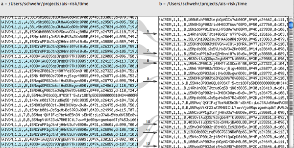
</div>
</div>

<div class="posted">
<br />Posted by <span class="item-creator">Kurt</span>
| <a class="link" href="2009-08.html#e2009-08-01T15_16_46.txt">Permalink</a>

<!-- <br /><a href="archives/2009-08-01T20_37_34.html#comments">Comments</a> -->
</div>
</div>
<div class="item">
<a id="e2009-08-01T13_52_34.txt" name="e2009-08-01T13_52_34.txt"></a>
<h2 class="date">08.01.2009 13:52</h2>
<div class="blogbody">
<h3 class="title">EPA has a research vessel</h3>
<div class="item-description">
I didn't know until yesterday that the EPA has an ocean going research
vessel: <a href="http://www.epa.gov/bold/">Ocean Survey Vessel (OSV)
Bold</a> - I'd call is either S/V or R/V, but that's just me.
<pre>The Ocean Survey Vessel Bold (The Bold) is EPA's only ocean and
coastal monitoring vessel. The Bold is equipped with state-of-the-art
sampling, mapping, and analysis equipment including sidescan sonar,
underwater video, water sampling instruments, and sediment sampling
devices, which scientists can use in various monitoring
activities. The vessel is a converted U.S. Navy T-AGOS class vessel
and is 224 feet long and 43 feet wide. EPA acquired the Bold on March
31, 2004.</pre>
How did I find out?  <a href="http://www.whitehouse.gov/blog/Ahoy-Matey/">Ahoy Matey!</a> [The White House Blog] 
</div>
</div>

<div class="posted">
<br />Posted by <span class="item-creator">Kurt</span>
| <a class="link" href="2009-08.html#e2009-08-01T13_52_34.txt">Permalink</a>

<!-- <br /><a href="archives/2009-08-01T15_16_46.html#comments">Comments</a> -->
</div>
</div>
<div class="item">
<a id="e2009-08-01T13_43_57.txt" name="e2009-08-01T13_43_57.txt"></a>
<h2 class="date">08.01.2009 13:43</h2>
<div class="blogbody">
<h3 class="title">ocean energy at UNH</h3>
<div class="item-description">
<a href="http://www.seacoastonline.com/articles/20090801-NEWS-908010322">Shaheen: Funds to aid UNH ocean lab</a> [seacoastonline]
<pre>...
U.S. Sen. Jeanne Shaheen, D-N.H., told staff following a tour of the
center that the Senate has approved $750,000 for their work as part of
the Energy and Water Appropriations bill. Although the bill still has
to go to a conference committee, she said she's confident the funding
will pass through unscathed.
...</pre>
</div>
</div>

<div class="posted">
<br />Posted by <span class="item-creator">Kurt</span>
| <a class="link" href="2009-08.html#e2009-08-01T13_43_57.txt">Permalink</a>

<!-- <br /><a href="archives/2009-08-01T13_52_34.html#comments">Comments</a> -->
</div>
</div>
<div class="item">
<a id="e2009-08-01T13_08_53.txt" name="e2009-08-01T13_08_53.txt"></a>
<h2 class="date">08.01.2009 13:08</h2>
<div class="blogbody">
<h3 class="title">OpenSeaMap</h3>
<div class="item-description">
<a href="http://www.openseamap.org/">OpenSeaMap</a> looks to do the
same as OpenStreetMap but for nautical charts.  This is less important
in the United States where NOAA releases charts for free, but even in
the US, this could have interesting uses.
<br /><br />
Here is a screen shot.  This English is a bit strange because the
original is German and automatic translaters are only so good.
<br /><br />
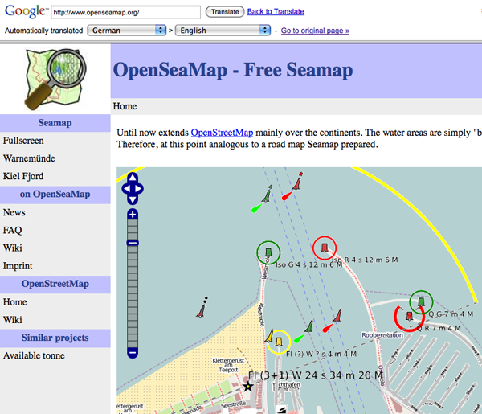
<br /><br />
Link found via <a href="http://appdomains.slashgeo.org/application_domains/09/07/31/1732210.shtml">Friday Geonews Cleanup: Proprietary vs Open Source Geospatial, 3D GIS, OpenSeaMap and Much More</a> [slashgeo]
</div>
</div>

<div class="posted">
<br />Posted by <span class="item-creator">Kurt</span>
| <a class="link" href="2009-08.html#e2009-08-01T13_08_53.txt">Permalink</a>

<!-- <br /><a href="archives/2009-08-01T13_43_57.html#comments">Comments</a> -->
</div>
</div>
</div>

</div>

<div id="links">

<div class="calendar">
<table border="0" cellspacing="4" cellpadding="0" summary="Calendar with links to days with entries">
<caption class="calendarhead">August 2009</caption>
<tr>
<th align="center"><span class="calendarday">Su</span></th>
<th align="center"><span class="calendarday">Mo</span></th>
<th align="center"><span class="calendarday">Tu</span></th>
<th align="center"><span class="calendarday">We</span></th>
<th align="center"><span class="calendarday">Th</span></th>
<th align="center"><span class="calendarday">Fr</span></th>
<th align="center"><span class="calendarday">Sa</span></th>
</tr>
<tr>
<td align="center"></td> <td align="center"></td> <td align="center"></td> <td align="center"></td> <td align="center"></td> <td align="center"></td>  
<td align="center"><span class="calendar"><a href="2009-08.html#e2009-08-01T21_25_20.txt">1</a></span></td>
</tr>
<tr>
             
<td align="center"><span class="calendar"><a href="2009-08.html#e2009-08-02T15_41_31.txt">2</a></span></td>
<td align="center"><span class="calendar">3</span></td>
<td align="center"><span class="calendar"><a href="2009-08.html#e2009-08-04T17_01_15.txt">4</a></span></td>
<td align="center"><span class="calendar"><a href="2009-08.html#e2009-08-05T21_37_45.txt">5</a></span></td>
<td align="center"><span class="calendar"><a href="2009-08.html#e2009-08-06T10_27_14.txt">6</a></span></td>
<td align="center"><span class="calendar">7</span></td>
<td align="center"><span class="calendar"><a href="2009-08.html#e2009-08-08T16_50_58.txt">8</a></span></td>
</tr>
<tr>
       
<td align="center"><span class="calendar"><a href="2009-08.html#e2009-08-09T14_42_46.txt">9</a></span></td>
<td align="center"><span class="calendar"><a href="2009-08.html#e2009-08-10T15_46_31.txt">10</a></span></td>
<td align="center"><span class="calendar"><a href="2009-08.html#e2009-08-11T19_28_03.txt">11</a></span></td>
<td align="center"><span class="calendar"><a href="2009-08.html#e2009-08-12T20_58_14.txt">12</a></span></td>
<td align="center"><span class="calendar"><a href="2009-08.html#e2009-08-13T10_56_39.txt">13</a></span></td>
<td align="center"><span class="calendar"><a href="2009-08.html#e2009-08-14T15_12_46.txt">14</a></span></td>
<td align="center"><span class="calendar">15</span></td>
</tr>
<tr>
      
<td align="center"><span class="calendar">16</span></td>
<td align="center"><span class="calendar"><a href="2009-08.html#e2009-08-17T22_13_51.txt">17</a></span></td>
<td align="center"><span class="calendar"><a href="2009-08.html#e2009-08-18T23_31_57.txt">18</a></span></td>
<td align="center"><span class="calendar"><a href="2009-08.html#e2009-08-19T11_32_20.txt">19</a></span></td>
<td align="center"><span class="calendar"><a href="2009-08.html#e2009-08-20T16_22_58.txt">20</a></span></td>
<td align="center"><span class="calendar"><a href="2009-08.html#e2009-08-21T14_28_04.txt">21</a></span></td>
<td align="center"><span class="calendar"><a href="2009-08.html#e2009-08-22T13_22_27.txt">22</a></span></td>
</tr>
<tr>
      
<td align="center"><span class="calendar">23</span></td>
<td align="center"><span class="calendar"><a href="2009-08.html#e2009-08-24T12_58_31.txt">24</a></span></td>
<td align="center"><span class="calendar"><a href="2009-08.html#e2009-08-25T19_20_13.txt">25</a></span></td>
<td align="center"><span class="calendar"><a href="2009-08.html#e2009-08-26T23_07_25.txt">26</a></span></td>
<td align="center"><span class="calendar"><a href="2009-08.html#e2009-08-27T15_30_57.txt">27</a></span></td>
<td align="center"><span class="calendar">28</span></td>
<td align="center"><span class="calendar">29</span></td>
</tr>
<tr>
 
<td align="center"><span class="calendar">30</span></td>
<td align="center"><span class="calendar"><a href="2009-08.html#e2009-08-31T16_12_58.txt">31</a></span></td>
</tr>
</table>
</div>

</div>

<br clear="all" />

</body>
</html>
